原文与图像：CC BY 4.0；本版作了中文翻译及阅读排版，非出版社官方译文。页面显示不需要网络，来源链接可选联网访问。
阅读目录
2023年北大西洋极端海洋热浪的驱动因素
Drivers of the extreme North Atlantic marine heatwave during 2023
收稿日期：2024年11月8日
Received: 8 November 2024
接受日期：2025年3月14日
Accepted: 14 March 2025
在线发表：2025年6月4日
Published online: 4 June 2025
电子邮箱：M.England@unsw.edu.au
e-mail: M.England@unsw.edu.au
摘要
Abstract
北大西洋环流和温度分布格局深刻影响着全球及区域气候，涵盖从天气尺度[1]到季节尺度[2,3,4]、年代际尺度[5]、多年代际尺度[6,7]及更长尺度[8,9]的所有时间尺度。
North Atlantic Ocean circulation and temperature patterns profoundly influence global and regional climate across all timescales, from synoptic[1] to seasonal[2,3,4], decadal[5], multidecadal[6,7] and beyond[8,9].
2023年北半球夏季发生了一场极端、接近海盆尺度的海洋热浪，并于7月达到峰值。
During 2023, an extreme and near-basin-scale marine heatwave developed during Northern Hemisphere summer, peaking in July.
增暖几乎遍及北大西洋的所有区域，包括副极地海洋；该区域过去50–100年的降温趋势被认为与经向翻转环流减弱有关[10,11]。
The warming spread across virtually all regions of the North Atlantic, including the subpolar ocean, where a cooling trend over the past 50–100 years has been linked to a slowdown in the meridional overturning circulation[10,11].
然而，导致这次异常强烈海洋表层增暖的机制仍不清楚。
Yet the mechanisms that led to this exceptional surface ocean warming remain unclear.
本文结合受观测约束的大气再分析资料、海洋观测与模式模拟，表明这次极端海洋增暖事件是由作用于极浅表层混合层的海气热通量造成的，而非异常海洋热输送所致。
Here we use observationally constrained atmospheric reanalyses alongside ocean observations and model simulations to show that air–sea heat fluxes acting on an extremely shallow surface mixed layer, rather than anomalous ocean heat transport, were responsible for this extreme ocean warming event.
结果显示，主导驱动因素是异常弱风使混合层强烈抬升（变浅），从而导致北大西洋浅薄表层的温度迅速升高。
The dominant driver is shown to be anomalously weak winds leading to strongly shoaling (shallowing) mixed layers, resulting in a rapid temperature increase in a shallow surface layer of the North Atlantic.
此外，太阳辐射异常在一些大致对应本区域主要航道的位置上，对区域尺度增暖有所贡献，提示硫酸盐排放减少也可能在局地产生了作用。
Furthermore, solar radiation anomalies made regional-scale warming contributions in locations that approximately correspond to some of the region’s main shipping lanes, suggesting that reduced sulfate emissions could also have played a localized role.
鉴于近几十年已观测到混合层变浅趋势，且预估表明这一趋势将延续至未来，北大西洋海洋热浪的严重程度将进一步加剧。
With a trend towards shallower mixed layers observed over recent decades, and projections that this will continue into the future, the severity of North Atlantic marine heatwaves is set to worsen.
正文
Main
海洋热浪的特征是某一区域海洋温度异常偏暖并持续一段时间[12,13]，有可能严重损害海洋生态系统[14]及依赖这些生态系统的人类系统[15]。
Marine heatwaves are characterized by sustained periods of abnormally warm ocean temperatures in a given region[12,13], with the potential for severe damage to marine ecosystems[14] and reliant human systems[15].
海洋热浪还会影响大气状况，包括改变天气形势以及影响邻近区域的陆地热浪[16,17]。
Marine heatwaves can also influence atmospheric conditions, including altering weather patterns and affecting land-based heatwaves in adjacent regions[16,17].
2023年夏季北大西洋海洋热浪与欧洲大范围极端热浪相伴发生，尤其是在7月；它的强度如此之大，以至于对当年创纪录的全球平均温度作出了显著贡献（文献[18]）。
The 2023 summertime marine heatwave in the North Atlantic was associated with extreme heatwaves over large areas of Europe, particularly during July, and was so large in magnitude that it was a substantial contributor to record global mean temperatures that developed that year (ref. [18]).
6–9月欧洲部分地区还发生了强风暴和致洪暴雨，可能因上游异常偏暖的北大西洋上空蒸发增强和大气水汽含量升高而加剧[19]。
There were also severe storms and flooding rains across parts of Europe during June–September, probably exacerbated by enhanced evaporation and higher atmospheric moisture content upstream over the hotter-than-average North Atlantic[19].
2023年全年降水异常显示，欧洲及英国许多地区的总降雨量相对于1991–2020年处于最高的10–20%范围内（文献[18]）。
Year-long precipitation anomalies for 2023 reveal many regions across Europe and the United Kingdom with total rainfall in the top 10–20% compared with 1991–2020 (ref. [18]).
鉴于北大西洋海洋热浪可能对生态系统造成重大损害，并使欧洲部分地区及其他区域出现严重热浪和致洪暴雨，理解2023年这一非同寻常事件的驱动因素十分重要。
Given the potential for North Atlantic marine heatwaves to cause substantial ecosystem damage and bring about severe heatwaves and flooding rains over parts of Europe and other regions, it is important to understand the drivers of the extraordinary 2023 event.
2023年北大西洋海洋热浪
The 2023 North Atlantic marine heatwave
图1a展示了2023年北大西洋日平均海表温度（SST）异常相对于卫星观测时期以往年份的分析。
An analysis of daily mean North Atlantic sea surface temperature (SST) anomalies during 2023 relative to previous years over the satellite measurement era is presented in Fig. 1a.
2023年北半球夏季，北大西洋上层海洋出现极为强烈的增暖，SST在6月和7月骤升至远超此前温度纪录的水平，并在当年余下时间内始终明显高于以往纪录。
During the Northern Hemisphere summer of 2023, the North Atlantic upper ocean developed exceptionally strong warming, with SST spiking well above previous record temperatures during June and July and remaining well above record levels for the remainder of the year.
本文后续分析的海洋模式再现了这一温度演变过程（图1a）。
This temperature evolution is reproduced by the ocean models we later analyse in this study (Fig. 1a).
将2023年北大西洋总增暖分解为西部和东部各自的贡献，可以发现表层加热具有明显的地域差异（图1b红色虚线）：6月东部北大西洋出现快速异常增暖，随后7月西部北大西洋温度异常陡增。
A breakdown of the total 2023 North Atlantic warming into separate western and eastern contributions reveals considerable geographic variations in surface heating (dashed red lines in Fig. 1b), with rapid anomalous warming observed in the eastern North Atlantic during June, followed by a surge in western North Atlantic temperature anomalies during July.
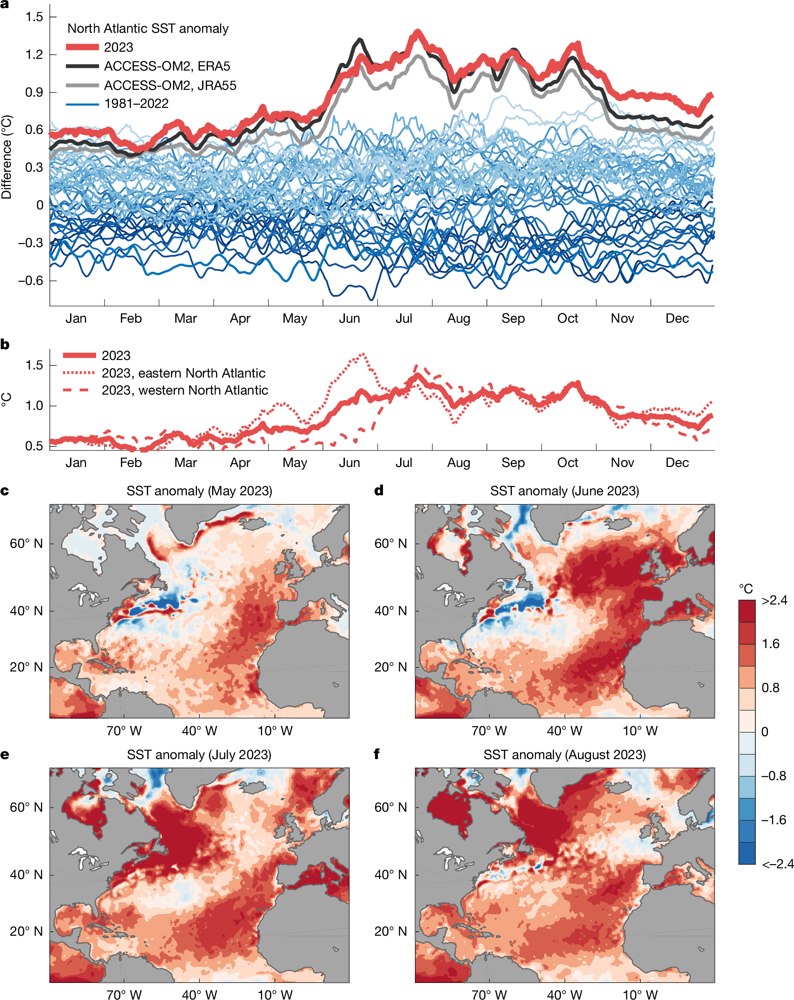
图1：相对于1981–2010年的北大西洋SST异常。
Fig. 1: North Atlantic SST anomalies relative to 1981–2010.
a，赤道至60° N之间平均的观测日平均SST异常（°C）；不同年份以深浅不同的蓝色线表示，从深蓝色（最早年份）至浅蓝色（最近年份），2023年以红色粗线表示。
a, Observed daily mean SST anomalies (°C) averaged between the equator and 60° N, with years indicated by colour shaded lines, from dark blues (earliest years) to pale blues (most recent years) and 2023 indicated in bold red.
SST的观测估计取自ERA5。
Observed estimates of SST are taken from ERA5.
ERA5和JRA55强迫模式试验模拟的2023年SST异常分别以黑色和灰色曲线表示。
Simulated SST anomalies during 2023 are shown for the model runs forced by ERA5 and JRA55 in black and grey curves, respectively.
b，将北大西洋总SST异常分解为东部和西部分量。
b, Decomposition of total North Atlantic SST anomalies into eastern and western components.
红色细点线和细虚线分别表示在40° W以东和以西单独进行区域平均得到的2023年日平均SST异常。
The thin red dotted and dashed lines indicate daily averaged SST anomalies for 2023 averaged separately east and west of 40° W, respectively.
c–f，2023年5–8月月平均SST异常的观测估计，以1981–2010年计算得到的各月平均值为基准。
c–f, Observed estimates of monthly average SST anomalies during May–August 2023, relative to monthly means calculated over the period 1981–2010.
2023年5–8月海洋异常增暖的空间分布（图1c–f）显示，尽管5月欧洲和北非以西最初已出现温和增暖，但6月的异常增暖速率更高，使东部北大西洋大部分地区达到创纪录的暖温度，相对于1981–2010年平均值偏高超过2 °C。
The geographic distribution of anomalous ocean warming during May–August 2023 (Fig. 1c–f) shows that, although initial modest warming west of Europe and North Africa occurred in May, even greater rates of anomalous warming occurred during June, covering much of the eastern North Atlantic with record warm temperatures, at more than 2 °C above average relative to 1981–2010.
7月，东北大西洋的部分增暖有所减弱；与此同时，西北部却出现极强的暖SST异常，从新斯科舍附近的北美海岸一直延伸至拉布拉多海。
During July, some of this northeast Atlantic warming abated, whereas—at the same time—the northwestern region flared up with exceptionally warm SST anomalies, extending from the North American coast around Nova Scotia and into the Labrador Sea.
8月，格陵兰邻近海域和哈得孙湾进一步增暖。
Further warming of the oceans adjacent to Greenland and in Hudson Bay occurred during August.
对大气环流和表面风速异常的检查（图2）显示，异常弱风区域与上述6月和7月北大西洋表层异常增暖区域相吻合。
An examination of the atmospheric circulation and surface wind speed anomalies (Fig. 2) reveals a coincidence between regions of anomalously weak winds and the regions of anomalous North Atlantic surface warming during June and July described above.
2023年6月的异常弱风主要与北大西洋气候态高压系统减弱有关（扩展数据图1）。
The anomalously weak winds during June 2023 were largely associated with a weakening of the climatological high-pressure system over the North Atlantic (Extended Data Fig. 1).
这一盛行反气旋环流的减弱，与此前识别出的来自发展中厄尔尼诺–南方涛动及热带东太平洋暖水的遥相关相一致；这些遥相关会削弱大西洋东北信风[20,21]。
This weakening of the prevailing anticyclonic circulation is consistent with previously identified teleconnections from a developing El Niño–Southern Oscillation and warmer waters in the tropical eastern Pacific, which act to reduce the northeast trade winds in the Atlantic[20,21].
鉴于异常风速减弱仅在6月达到峰值，其他气候或天气尺度异常很可能也发挥了作用（扩展数据图2a）。
Further climate or synoptic-scale anomalies probably also played a role, given that the exceptional wind reduction peaked only in June (Extended Data Fig. 2a).
到2023年7月，西北大西洋的弱风变得更加显著（图2c及扩展数据图2b），与该区域SST异常的陡增相吻合（比较图1e与图1d），而东部的弱风区则有所收缩。
During July 2023, weakened winds then became more pronounced in the northwest Atlantic (Fig. 2c and Extended Data Fig. 2b), coinciding with that region’s surge in SST anomalies (compare Fig. 1e with Fig. 1d), whereas to the east, the weakened wind field contracted.
与此同时，来自北方的异常气流使不列颠群岛以西出现一片SST降温区。
At the same time, an anomalous air flow from the north led to a region of SST cooling west of the British Isles.
8月，几乎所有仍然异常偏暖的区域都与风速弱于平均值的区域重合（图2d）。
During August, virtually all of the regions that remained anomalously warm coincided with weaker than average winds (Fig. 2d).
相对于1979年以来的卫星观测时期，2023年6月东部北大西洋区域平均风速为历年6月最低纪录；2023年7月西部北大西洋则并列历年7月最低纪录（扩展数据图2），恰与图1b所示SST异常的最大幅度跃升相对应。
Relative to the satellite era since 1979, the area-averaged wind speed over the eastern North Atlantic was the lowest ever recorded for June during 2023 and, for the western North Atlantic, the joint lowest ever recorded for July during 2023 (Extended Data Fig. 2), coinciding with the largest surges in SST anomalies seen in Fig. 1b.
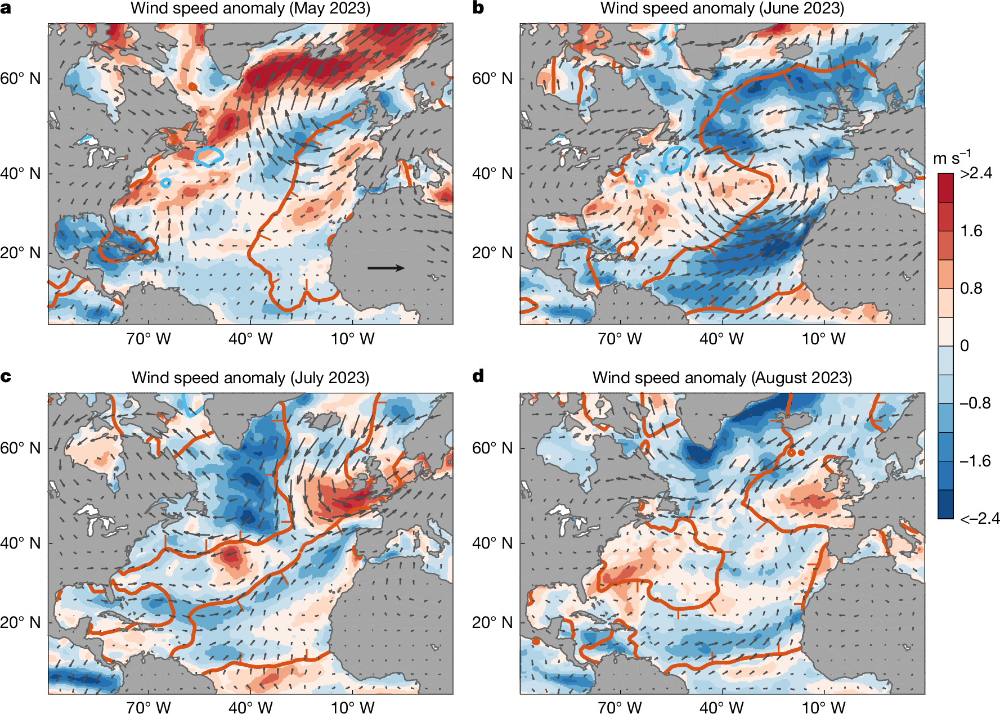
图2：2023年5月、6月、7月和8月月平均表面风速及风矢量异常。
Fig. 2: Monthly average surface wind speed and wind vector anomalies during May, June, July and August 2023.
a–d，风速异常（m s−1）以阴影表示，相对于1981–2010年平均值计算。
a–d, Wind speed anomalies (m s−1) are shaded and calculated relative to the 1981–2010 mean.
风矢量异常的标尺显示在a图中，为5 m s−1。
Wind vector anomaly scale is shown in panel a, 5 m s−1.
风速和风矢量的观测估计取自ERA5。
Observed estimates of wind speed and wind vectors are taken from ERA5.
图1中的+1 °C和−1 °C SST异常等值线分别以红色和蓝色叠加显示。
The +1 °C and −1 °C SST anomaly contours from Fig. 1 are overlaid in red and blue, respectively.
为避免歧义，在+1 °C异常等值线内侧添加红色小刻线，以指示SST异常偏暖区域。
To avoid ambiguity, the regions of anomalous warm SST are indicated by the small red tick marks added to the inner side of the +1 °C anomaly contour.
海面风速减弱可通过多种方式影响海气热通量。
Reduced winds over the ocean affect air–sea heat fluxes in several ways.
首先，海洋潜热和感热损失通常都会减少，因为这些热交换与表面风速的平方成比例[22]。
First, both latent and sensible ocean heat loss typically decrease, as these exchanges of heat scale with the square of surface wind speed[22].
海洋蒸发减少又有助于减少低层和中层云量；2023年6月和7月低风速区域确实出现了这种情况（扩展数据图3）。
Reduced ocean evaporation can, in turn, contribute to reduced low-level and mid-level cloudiness, which was indeed the case over regions of low wind speed during June and July 2023 (Extended Data Fig. 3).
此外，海面风速减弱可能因海盐飞沫气溶胶减少以及破碎波产生的白沫减少而降低表面反照率[23,24]，使更多入射太阳辐射进入海洋。
Furthermore, weakened winds over the ocean may lead to reduced surface albedo as a result of reduced sea-spray aerosols and reduced white-capping from breaking waves[23,24], which allows more incoming solar radiation to enter the ocean.
因此，低风速与较晴朗天空相结合，有利于增加进入海洋的净表面热通量。
In combination with clearer skies, low wind speeds are thus conducive to an increase in the net surface heat flux entering the ocean.
一旦海洋表层增暖，通常会降低大气边界层稳定度并增强低层干空气混合，从而降低低层相对湿度，减少低层云。
Once the surface layer of the ocean has warmed, this tends to reduce atmospheric boundary layer stability and increase mixing of dry air at low levels, reducing the low-level relative humidity and leading to fewer low-level clouds.
在夏季，这会形成放大反馈，使海洋表层进一步增暖。
In summer, this leads to an amplifying feedback with further surface ocean warming.
扩展数据图4展示了2023年夏季观测净表面热通量异常，以及两个主要分量——入射短波辐射和向外潜热通量——的异常。
The observed net surface heat flux anomalies during summer 2023 as well as the anomalies in the two dominant components—incoming shortwave radiation and outgoing latent heat fluxes—are shown in Extended Data Fig. 4.
这种分项分解表明，海洋净吸热异常区域主要与高于平均值的入射太阳辐射相关（扩展数据图4中列），更局地化的潜热损失低于平均值区域也提供了额外贡献（扩展数据图4右列）。
This breakdown into constituent terms reveals that the regions of anomalous net ocean heat gain are primarily associated with above-average incoming solar radiation (Extended Data Fig. 4, middle column), with an extra contribution from more localized regions of lower-than-average latent heat loss (Extended Data Fig. 4, right column).
向外长波和感热通量引起的变化要小得多，大部分区域的异常通常小于约10 W m−2（图未示）。
Variations resulting from outgoing longwave and sensible heat fluxes are much smaller, with anomalies generally less than about 10 W m−2 for most regions (figure not shown).
总体而言，6月东部北大西洋以及7月西部北大西洋增暖最强的区域，与海洋表面异常吸热区域相对应（扩展数据图4）。
Overall, the regions of greatest warming during June in the eastern North Atlantic and July in the western North Atlantic correspond to regions of anomalous surface ocean heat gain (Extended Data Fig. 4).
相比之下，7月东部北大西洋大部分海域出现海洋异常失热（扩展数据图4g）；这与西欧邻近大气增暖相关，并对该区域7月的高温和热浪有所贡献[19]。
By contrast, there is anomalous ocean heat loss across much of the eastern North Atlantic during July (Extended Data Fig. 4g), which has been linked to a warming of the atmosphere adjacent to western Europe that contributed to the hot temperatures and heatwaves seen across the region during July[19].
这些增强的蒸发通量也可能促成了欧洲7月的异常降雨[19]。
These enhanced evaporative fluxes might also have contributed to the anomalous rainfall that occurred over Europe during July[19].
除上述海气热交换过程外，减弱的东北信风还延伸至撒哈拉沙漠上空，尤其是在2023年6月（图2b）。
As well as the air–sea heat exchange processes described above, the weakened northeasterly trade winds extended over the Sahara Desert, particularly during June 2023 (Fig. 2b).
此前研究已将东北信风减弱与向西进入大西洋的沙尘输送减少联系起来[25]。
Weakened northeast trades have previously been linked to a reduction in dust transport westward into the Atlantic Ocean[25].
撒哈拉沙尘输送的这种减少与暖SST异常有关，因为沙尘会在入射太阳辐射到达海面之前将其散射[26]。
Such a reduction in Saharan dust transport has been associated with warm SST anomalies because dust acts to scatter incoming solar radiation before it reaches the ocean surface[26].
另一个被提出用于解释2023年入射太阳辐射增加的因素，是国际海事组织2020年协议实施后主要航道沿线的硫酸盐气溶胶排放减少[27,28]。
Another factor proposed to account for the increase in incoming solar radiation in 2023 is reduced sulfate aerosol emissions along the main shipping lanes following the International Maritime Organization 2020 agreement[27,28].
然而，近期研究指出，考虑到地球能量不平衡存在较大年际变率，以及这些变化实施以来的观测记录较短，这一信号在海盆尺度上可能难以检测[29]。
However, recent work has suggested that this signal may be difficult to detect on a basin scale given the large interannual variability in Earth’s energy imbalance and the short observational record since these changes came into effect[29].
尽管这一问题仍在持续研究，本文后面将表明，对于整个北大西洋表层创纪录的增暖而言，太阳辐射异常的相对贡献小于混合层变浅的影响。
Although this topic remains an area of continued research, we will later show that, in terms of the record-breaking basin-wide warming of the surface North Atlantic, the relative contribution of solar radiation anomalies was less than the impact of shoaling mixed layers.
夏季海洋表层形成明显层结，温暖表水覆盖在较冷深水之上。
During summer, the surface layer of the ocean becomes well stratified, with warm surface waters overlying colder deep waters.
因此，这一季节的混合层深度（MLD）主要取决于表面风强度；风会在由其驱动的湍流混合层内混合和翻动表层海水。
Mixed layer depth (MLD) during this season is thus largely set by the strength of surface winds, which act to mix and overturn surface waters within the wind-driven turbulent mixed layer.
因此，2023年夏季风速创纪录偏低的区域大体与异常浅混合层相吻合，并不令人意外（图2和3；其他海洋再分析产品的比较见扩展数据图10）。
It is little surprise then that the regions of record-low wind speeds during summer 2023 largely coincided with unusually shallow mixed layers (Figs. 2 and 3; other ocean reanalysis products are compared in Extended Data Fig. 10).
具体而言，2023年6月异常偏浅的MLD从热带北大西洋向北延伸至欧洲以西海域，海盆平均MLD异常达到比平均值浅约三个标准差的程度（图3e；即3σ事件，若MLD异常围绕均值呈正态分布，则其发生概率仅为0.13%）。
In particular, during June 2023, anomalously shallow MLDs extended from the tropical North Atlantic north to regions west of Europe, with basin averaged MLD anomalies reaching around three standard deviations shallower than average (Fig. 3e; that is, a 3σ event, with a likelihood of occurrence of only 0.13% assuming that the MLD anomalies are normally distributed about the mean).
随后，2023年7月西北大西洋出现浅混合层，与一片风速弱于平均值的区域相吻合（图2c）。
Shallow mixed layers can then be seen over the northwest Atlantic during July 2023, coinciding with a region of weaker-than-average winds (Fig. 2c).
该区域的部分海域还可能因邻近格陵兰冰盖融水输入而进一步发生混合层变浅（扩展数据图5）；2023年融化季的融化程度在45年前开始的被动微波记录中排名第三[30]。
Part of this region may have also experienced further mixed layer shoaling owing to meltwater input from the nearby Greenland ice sheet (Extended Data Fig. 5), with 2023 being the third highest melt season since passive microwave records began 45 years ago[30].
格陵兰西南部融化尤为强烈，额外淡水在2023年夏季进入拉布拉多海（文献[30]）。
Melt was particularly high in the southwest of Greenland, with added freshwater entering the Labrador Sea during summer 2023 (ref. [30]).
这一融水增加区域与强烈淡化和增暖相吻合，说明融水对海洋的影响主要不是通过其温度，而是通过低盐度、进而低密度（以及浅混合层）的动力作用。
This region of added meltwater coincided with strong freshening and warming, illustrating that the impact of meltwater on the ocean is not primarily through its temperature but through the dynamical effects of its low salinity and, therefore, low density (and shallow mixed layers).
对ERA5强迫模式模拟的MLD异常进行分析发现，2023年夏季月份北大西洋各处创纪录MLD变浅的总体分布格局是一致的（扩展数据图6）。
An analysis of the ERA5-forced model-simulated MLD anomalies reveals an overall consistent pattern of record MLD shoaling across the North Atlantic during the summer months of 2023 (Extended Data Fig. 6).
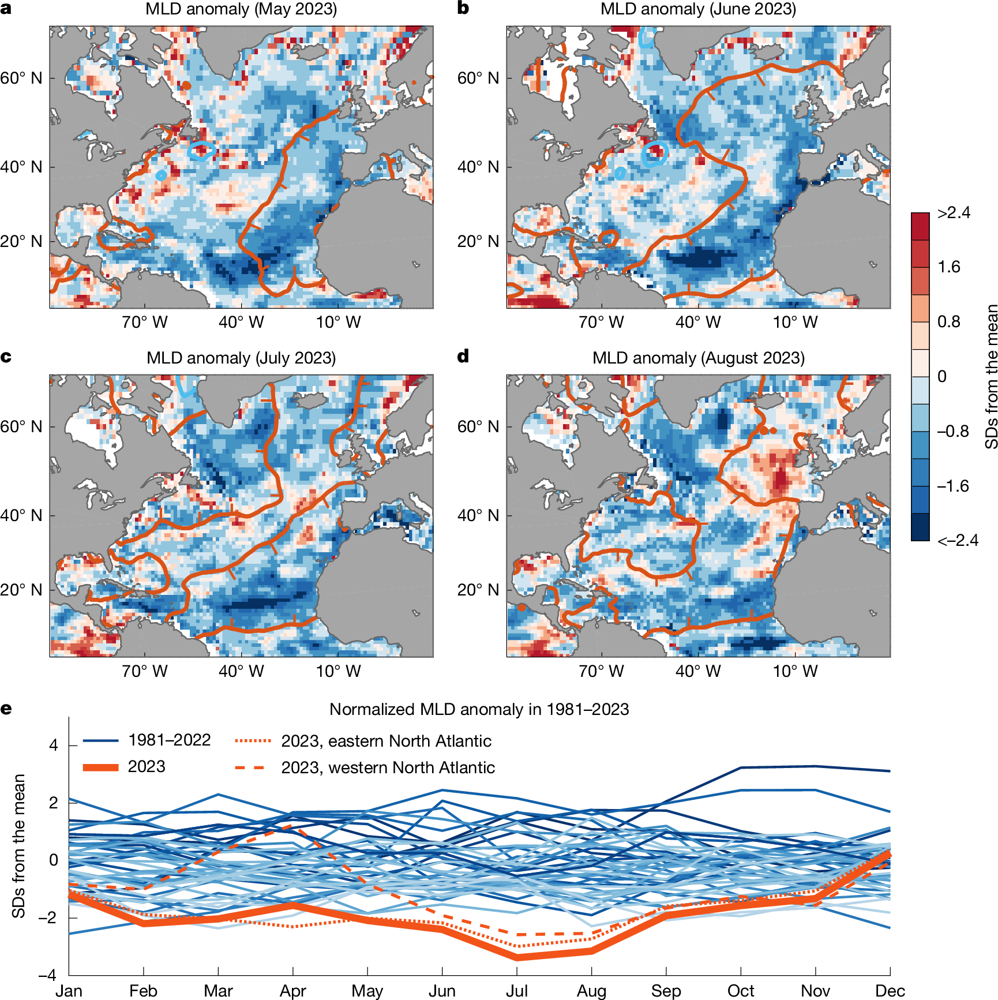
图3：2023年5月、6月、7月和8月观测月平均表层MLD异常。
Fig. 3: Observed monthly average surface MLD anomalies during May, June, July and August 2023.
a–d，MLD异常（阴影）以各月各位置的一个标准差（SD）归一化，并相对于1981–2010年平均值计算。
a–d, MLD anomalies (shaded) are normalized by one standard deviation (SD) for each month and location and calculated relative to the 1981–2010 mean.
MLD采用相对于表面密度的0.125 kg m−3密度阈值标准，利用IAPv3气候资料中的温度和盐度数据计算（方法）。
The MLD is calculated using a density threshold criterion of 0.125 kg m−3, relative to surface density, using temperature and salinity data from the IAPv3 climatology (Methods).
图2中的±1 °C SST异常等值线分别以红色和蓝色叠加显示。
The ±1 °C SST anomaly contours from Fig. 2 are overlaid in red and blue, respectively.
e，北大西洋（赤道至60° N）区域平均MLD异常时间序列；不同年份以深浅不同的蓝色线表示，从深蓝色（最早年份）至浅蓝色（最近年份），2023年以红色粗线表示。
e, Time series of North Atlantic area-averaged MLD anomalies (equator to 60° N), with years indicated by colour shaded lines, from dark blues (earliest years) to pale blues (most recent years) and 2023 indicated in bold red.
红色细点线和细虚线分别表示在40° W以东和以西单独进行区域平均得到的2023年月平均MLD异常。
The thin red dotted and dashed lines indicate monthly averaged MLD anomalies for 2023, averaged separately east and west of 40° W, respectively.
对IAPv3数据集中过去四十年观测MLD的逐月分析（图3e）表明，夏季混合层逐渐变浅，而2023年的MLD异常所对应的混合层显著浅于仅依据长期趋势所预期的深度（扩展数据图7a）。
A monthly analysis of observed MLD in the IAPv3 dataset over the past four decades (Fig. 3e) shows a progressive shoaling of mixed layers during summer, with the 2023 MLD anomalies substantially shallower than that expected from the long-term trends alone (Extended Data Fig. 7a).
检查1980年以来观测的海盆平均上层海洋温度层结和年平均温度剖面，也可发现这一点（扩展数据图7b和8）。
This can also be seen when examining basin-averaged upper ocean temperature stratification and annual mean temperature profiles observed since 1980 (Extended Data Figs. 7b and 8).
IAPv3中1980–2023年6–8月平均的变浅趋势为每十年−0.58 m；2023年夏季北大西洋平均MLD为20.6 m，比20世纪90年代初观测到的夏季MLD峰值27.9 m浅逾7 m（扩展数据图7a），也比1980–2000年夏季气候平均值25.1 m浅约20%。
The IAPv3 shoaling trend averaged over June–August is −0.58 m per decade during 1980–2023, with average North Atlantic MLD in the summer of 2023 (20.6 m) more than 7 m shallower than the peak summer MLD value of 27.9 m observed in the early 1990s (Extended Data Fig. 7a) and around 20% shallower than the climatological summer mean during 1980–2000 (25.1 m).
这意味着夏季混合层明显变浅，降低了表层海洋的热惯性。
This corresponds to a marked shoaling of the summer mixed layer, reducing the thermal inertia of the surface ocean.
就北大西洋平均而言，2023年7月海洋混合层比平均值浅约四个标准差（4σ事件，假定MLD异常呈正态分布，则发生概率仅为0.003%）。
Averaged over the North Atlantic, ocean mixed layers were around four standard deviations shallower than average during July 2023 (a 4σ event, with a likelihood of occurrence of just 0.003% assuming normally distributed MLD anomalies).
在海洋净吸热季节，这些浅混合层很容易增暖，因为加热薄表层所需的入射能量更少。
During a season of net ocean heat gain, these shallow mixed layers readily warm because less incoming energy is needed to heat a thin surface layer.
这触发了一种放大反馈：原有的海洋增暖和层结未受到弱表面风的扰动，进而导致进一步增暖和更强层结（以及更浅的混合层）。
This triggers an amplifying feedback in which the original ocean warming and stratification, left undisturbed by weak surface winds, leads to further warming and higher levels of stratification (and even shallower mixed layers).
其结果是2023年6月和7月出现极快增暖。
A very rapid warming set in as a consequence during June and July 2023.
表层温度收支
Surface temperature budget
为量化各驱动因素的相对重要性，我们接下来利用大气再分析场强迫的海洋模式模拟，考察增暖最强月份的表层混合层温度收支。
To quantify the relative importance of the various driving factors, we next examine a temperature budget of the surface mixed layer during the peak warming months using an ocean model simulation forced by atmospheric reanalysis fields.
我们评估了两组模式模拟（方法），两者均捕捉到了2023年夏季北大西洋异常增暖的主要特征（图1a）。
Two model simulations were evaluated (Methods), with both capturing the main features of North Atlantic anomalous warming during summer 2023 (Fig. 1a).
这里分析ERA5大气再分析场强迫的海洋模式；JRA55强迫模拟也得到相似结果（图未示）。
Here we analyse the ocean model forced by ERA5 atmospheric reanalysis fields; similar results are obtained from the JRA55-forced simulation (figures not shown).
也可以重建混合层温度（MLT）收支的观测估计，其中包括表面海气热通量项的所有分量，但缺乏能够分辨海洋平流和混合项的数据，而且由于观测记录稀疏，存在更大不确定性（方法）。
Observational estimates of the mixed layer temperature (MLT) budget can also be reconstructed, including all components of the surface air–sea heat flux terms, but data are unavailable to resolve the ocean advection and mixing terms, and larger uncertainty exists owing to the sparse measurement record (Methods).
尽管如此，观测估计与两组模式模拟对下述MLT收支计算得到的结果总体一致。
Nonetheless, both the observationally derived estimate and the two model simulations show overall agreement in the results obtained from the MLT budget calculations described below.
图4a展示了ERA5强迫模式所模拟的2023年5–8月北大西洋表层总增暖分析，将其分解为MLT倾向异常（°C/月），并同时展示相对于1981–2010年气候平均值的其他收支项。
Figure 4a shows an analysis of the ERA5-forced model-simulated total North Atlantic surface warming during May–August 2023, decomposed into anomalies in the MLT tendencies (°C per month), alongside other budget terms relative to the 1981–2010 climatological mean.
注意，由于这里建立的是MLT收支，每一项的异常（例如海气热通量导致的增暖）既可能单独由MLD异常引起，也可能由MLD异常与热源项本身的异常共同引起。
Note that, because the budget is formulated as a MLT budget, anomalies in each term (for example, the warming due to air–sea heat fluxes) can result from anomalies in the MLD alone or in combination with anomalies in the heat source terms themselves.
图4下方各图还展示了2023年6–7月MLT倾向项的空间分布，分为净海气热通量引起的增暖异常，以及海洋环流和混合共同作用引起的增暖异常。
The geographic distribution of the MLT tendency term is also plotted for June–July 2023 in Fig. 4 (lower panels), separated into anomalies in warming due to net air–sea heat fluxes and anomalies in warming due to the combined effects of ocean circulation and mixing.
图5a给出了相应的观测MLT收支，它由ERA5海气热通量结合Argo浮标数据及其他海洋水文观测得到。
The corresponding observationally based MLT budget derived from ERA5 air–sea heat fluxes combined with Argo float data and other hydrographic measurements is included in Fig. 5a.
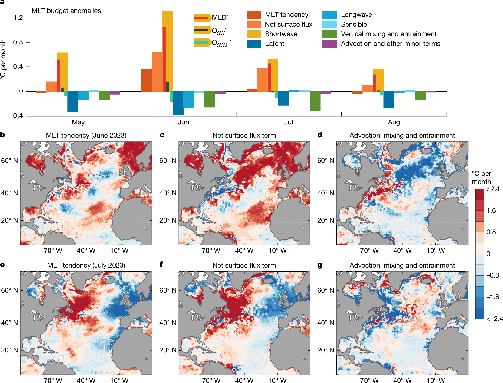
图4：模式推导的2023年北大西洋表层MLT收支异常，以1981–2010年气候平均值为基准。
Fig. 4: Model-derived North Atlantic surface MLT budget anomalies during 2023 relative to the 1981–2010 climatological mean.
a，将5–8月北大西洋（赤道至60° N）的表层异常增暖分解为各个表面热通量项（及净表面热通量）、净垂向混合与卷入项，以及平流加其他较小项。
a, Anomalous surface warming over the North Atlantic (equator to 60° N) during May-August decomposed into each surface heat flux term (and the net surface heat flux), the net vertical mixing and entrainment terms and the advection plus other minor terms.
总MLT倾向异常（红柱）主要是净表面热通量异常（橙柱）与混合层底部由垂向混合和卷入引起的冷却异常（绿柱）之间的平衡。
The total anomalous MLT tendency (red bars) is primarily a balance between net surface heat flux anomalies (orange bars) and cooling anomalies at the base of the mixed layer due to vertical mixing and entrainment (green bars).
短波辐射异常被分解为仅由MLD变化造成的异常（MLD′）、仅由表面热通量变化造成的异常（QSW′），以及由穿过混合层底部的辐射通量造成的异常（QSW,H′）。
The shortwave radiation anomalies are decomposed into anomalies due to MLD variations alone (MLD′), anomalies due to surface heat flux variations alone (QSW′) and anomalies due to the radiative flux through the base of the mixed layer (QSW,H′).
b–g，6月和7月的混合层异常增暖（b、e），与净表面热通量异常（c、f）及海洋总平流、混合和卷入（d、g）引起的异常增暖的比较。
b–g, June and July anomalous mixed layer warming (b,e) versus that due to anomalies in net surface heat fluxes (c,f) and total ocean advection, mixing and entrainment (d,g).
所有单位均为°C/月。
Units are °C per month throughout.
净表面热通量异常针对混合层计算，并扣除在混合层底部穿透出去的短波辐射（方法）。
The net surface heat flux anomalies are calculated for the mixed layer, subtracting out shortwave radiation penetration at the base of the mixed layer (Methods).
这里展示的模式模拟由ERA5大气再分析场强迫。
The model simulation shown here is that forced by the ERA5 atmospheric reanalysis fields.
JRA55强迫的海洋模式模拟得到相似结果。
Similar results are obtained from the JRA55-forced ocean model simulation.
注意，该分析计算的是以每个月为中心的MLT收支项，而图1c–f中可辨识的增暖是从一个月到下一个月的变化（即月平均值之间的变化，以每月月初为中心）。
Note that this analysis calculates the MLT budget terms centred on each month, while the warming discernible in Fig. 1c–f is from one month to the next (that is, between monthly averages, centred at the start of each month).
还需注意，该分析未包括航运排放年际变化的影响。
Also note that this analysis does not include the effects of interannual variability in shipping emissions.
更多细节见方法及扩展数据图11。
See Methods and Extended Data Fig. 11 for further details.
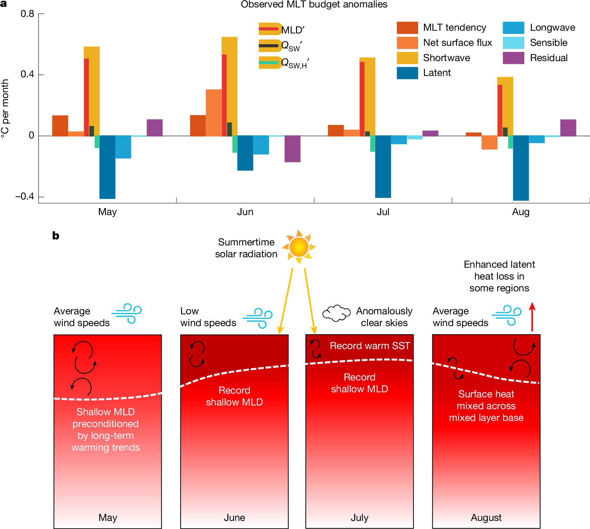
图5：观测MLT收支异常，以及概括导致2023年北大西洋夏季创纪录海洋热浪各过程的示意图。
Fig. 5: Observed MLT budget anomalies and schematic summarizing the processes that led to the record summer North Atlantic marine heatwave in 2023.
a，观测的5–8月北大西洋（赤道至60° N）表层异常增暖，分解为各个表面热通量项；残差项包含未分辨的混合、卷入、平流及再分析估计的不确定性。
a, Observed anomalous surface warming over the North Atlantic (equator to 60° N) during May–August, decomposed into each surface heat flux term, with the residual terms including unresolved mixing, entrainment, advection plus uncertainty in the reanalysis estimates.
异常相对于1981–2010年气候平均值计算。
Anomalies are calculated relative to the 1981–2010 climatological mean.
收支项使用ERA5海气热通量，结合IAPv3气候资料推导的MLD和温度计算（方法）。
The budget terms are calculated using ERA5 air–sea heat fluxes combined with MLD and temperature derived from the IAPv3 climatology (Methods).
短波辐射异常被分解为仅由MLD变化造成的异常（MLD′）、仅由表面热通量变化造成的异常（QSW′），以及由穿过混合层底部的辐射通量造成的异常（QSW,H′）。
The shortwave radiation anomalies are decomposed into anomalies due to MLD variations alone (MLD′), anomalies due to surface heat flux variations alone (QSW′) and anomalies due to the radiative flux through the base of the mixed layer (QSW,H′).
此处分析未包括航运排放年际变化的影响。
The analysis presented here does not include the effects of interannual variability in shipping emissions.
更多细节见方法及扩展数据图11。
See Methods and Extended Data Fig. 11 for further details.
b，示意图展示了北大西洋表层增暖在5月、6月、7月和8月的演进过程。
b, The schematic shows the progression of North Atlantic surface warming during May, June, July and August.
白色虚线表示MLD。
Dashed white line indicates the MLD.
2023年5月的浅混合层，是北大西洋春季层结位置长期变浅趋势的一部分。
Shallow mixed layers in May 2023 are part of a long-term trend towards shallower springtime stratification in the North Atlantic.
6月东北大西洋的快速增暖和混合层变浅，由异常弱风和晴朗天空驱动，使混合层远浅于平均状态。
Rapid warming and shoaling of mixed layers in the northeast Atlantic during June was driven by anomalous weak winds and clear skies, leading to much shallower than average mixed layers.
这一趋势在7月的西北大西洋继续发展。
That tendency continued during July in the northwest Atlantic.
8月，一些地区的大气风强度恢复正常或高于平均水平，导致这些区域海洋异常失热和大气增暖，同时还发生异常混合，以及表层热量跨过混合层底部的脱卷入。
During August, atmospheric winds returned to normal or above-average strength in some regions, leading to anomalous ocean heat loss and atmospheric warming in those areas, as well as anomalous mixing and detrainment of surface layer heat across the base of the mixed layer.
图5b内文字对照
夏季太阳辐射
Summertime solar radiation
平均风速
Average wind speeds
低风速
Low wind speeds
异常晴朗的天空
Anomalously clear skies
一些区域潜热损失增强
Enhanced latent heat loss in some regions
长期增暖趋势预先形成浅MLD条件
Shallow MLD preconditioned by long-term warming trends
创纪录的浅MLD
Record shallow MLD
创纪录的暖SST
Record warm SST
表层热量通过混合跨越混合层底部
Surface heat mixed across mixed layer base
5月
May
6月
June
7月
July
8月
August
模式和观测MLT收支均表明，海洋表层的创纪录增暖是异常浅混合层、晴朗天空和强入射短波辐射共同作用的结果（图4及5a）。
The model and observed MLT budgets both reveal that the record surface ocean warming was because of a combination of anomalously shallow mixed layers, clear skies and high incoming shortwave radiation (Figs. 4 and 5a).
然而，将表面热通量异常和异常浅MLD的相对作用分开考察（图4a、5a中QSW项内的柱形）发现，异常浅的混合层在全海盆增暖中起主导作用，因此即使海气热通量与夏季气候平均值无异，这场海洋热浪也几乎同样严重。
However, a breakdown of the relative roles of anomalous surface heat fluxes versus anomalous shallow MLDs (bars shown in the QSW term; Figs. 4a and 5a) reveals that the exceptionally shallow mixed layers played the dominant role in the basin-wide warming, such that the marine heatwave would have been almost as severe had air–sea heat fluxes been no different to the climatological summer mean.
相比之下，太阳辐射异常的影响更为局地化。
By contrast, solar radiation anomalies had a more localized impact.
区域分析显示，高于平均值的入射太阳辐射发挥主导作用的主要区域（扩展数据图9），与低层至中层云量减少的区域相吻合（扩展数据图3和4）。
A regional analysis reveals that the main areas where above-average incoming solar radiation played the dominant role (Extended Data Fig. 9) coincided with reduced low-level to mid-level cloud cover (Extended Data Figs. 3 and 4).
其中一些区域还与主要航道位置重合；这些航道上硫酸盐排放的减少已被认为与更晴朗的天空及更强入射太阳辐射有关[31,32,33,34]。
Some of these regions also coincide with locations of the main shipping lanes in which reduced sulfate emissions have been linked to clearer skies and higher incoming solar radiation[31,32,33,34].
因此，低层云量的部分减少可能与航运排放减少所产生的间接作用有关[35]。
Part of the reduction in low-level cloud cover could thus be linked to indirect effects from reduced shipping emissions[35].
总体而言，我们的区域温度收支分析表明，尽管全海盆表层增暖主要由混合层变浅驱动，航运排放减少仍可能在2023年北大西洋海洋热浪中发挥了局地作用。
Overall, our regional temperature budget analysis demonstrates that, although the basin-wide surface warming was driven primarily by shoaling mixed layers, reduced shipping emissions could have played a localized role in the 2023 North Atlantic marine heatwave.
不过，量化航运排放减少的直接和间接辐射影响仍存在不确定性[32,35]；其他因素也可能促成这些短波辐射异常，例如天气和气候模态变化导致的云量减少、接近太阳活动极大期（于2024年达到）、表面反照率效应及大气水汽[35]。
Uncertainty remains nonetheless in quantifying the direct and indirect radiative impacts of reduced shipping emissions[32,35], with other factors also potentially contributing to these shortwave radiation anomalies, such as reduced cloud cover due to variations in weather and climate modes, proximity to the solar maximum (reached in 2024), surface albedo effects, and atmospheric water vapour[35].
海气热通量项无法解释的区域包括湾流及其延伸区，那里以温暖热带表水增强的向北平流作用为主（图4）。
The regions that cannot be explained by the air–sea heat flux terms include the Gulf Stream and its extension, where enhanced northward advection of warm tropical surface waters dominates (Fig. 4).
在其他海域，即模式海洋环流和混合项以蓝色阴影表示的区域（图4d、g），表面异常加热超过了解释表层增暖所需的能量。
Elsewhere, in the regions indicated by blue shading in the model ocean circulation and mixing terms (Fig. 4d,g), the anomalous surface heating exceeds the amount of energy required to account for the surface layer warming.
这些区域存在跨夏季混合层底部的增强垂向失热，其原因既包括短波穿透效应，也包括异常垂向卷入和混合（图4a）。
In these regions, there is enhanced vertical heat loss across the base of the summer mixed layer, owing to both shortwave penetration effects as well as anomalous vertical entrainment and mixing (Fig. 4a).
这使混合层下方水柱显著增暖，从观测温度–深度异常剖面中也可看出这一点（扩展数据图8下方各图）。
This results in substantial heating of the water column below the mixed layer, as can also be seen in the observed temperature–depth anomaly profiles (Extended Data Fig. 8, lower panels).
观测MLT收支各项总体一致：混合层变浅是促成全海盆创纪录海洋热浪的主导因素，而异常入射短波辐射同时提供区域性贡献（图5a及扩展数据图9）。
Overall agreement can be seen in the observational MLT budget terms, with shoaling mixed layers the dominant factor contributing to the record-breaking basin-wide marine heatwave, alongside a regional contribution from anomalous incoming shortwave radiation (Fig. 5a and Extended Data Fig. 9).
驱动极端加热的机制
Mechanisms driving the extreme heating
图5b展示了大西洋北半球夏季表层混合层增暖演进过程的示意图。
A schematic outlining the progression of surface mixed layer warming over the Northern Hemisphere summer in the Atlantic Ocean is shown in Fig. 5b.
6月在东部、随后7月在西部，海面创纪录的弱风使这些区域的MLD达到有记录以来最浅水平。
During June in the east and then subsequently July in the west, record weak winds over the surface of the ocean led to the shallowest ever recorded MLDs in those regions.
再加上比平均状态更晴朗的天空、较低云反照率[27]以及跨海气界面的净吸热，产生了一种放大反馈，使北大西洋大部分海域形成极浅、极暖的混合层。
Coupled with clearer-than-average skies, lower cloud albedo[27] and net heat gain across the air–sea interface, this led to an amplifying feedback that produced very shallow and very warm mixed layers across much of the North Atlantic Ocean.
尽管表层增暖先后分别在6月的东部北大西洋以及7月的西北部北大西洋发展，两次突发表层增暖似乎受相同的总体机制控制，即由异常弱风、晴朗天空和浅混合层驱动的表层加热。
Although the progression of surface warming played out separately over the eastern North Atlantic during June and then in the northwestern North Atlantic during July, the same overall mechanism seems to have controlled both bursts of surface warming; namely, surface heating driven by anomalously weak winds, clear skies and shallow mixed layers.
大西洋主要航道沿线硫酸盐气溶胶排放减少[27,28,31,32]也被提出是2023年创纪录增暖的驱动因素。
Reduced sulfate aerosol emissions along the main Atlantic shipping lanes[27,28,31,32] has also been proposed as a driver of the record-breaking 2023 warming.
通过分别假定（1）气候态海气热通量和（2）气候态MLD，重新计算北大西洋温度收支异常（图4a和5a），我们证明，在海盆尺度上，异常弱风造成的浅混合层是北大西洋全海盆创纪录增暖的主导驱动因素。
By recalculating the North Atlantic temperature budget anomalies assuming (1) climatological air–sea heat fluxes and (2) climatological MLDs (Figs. 4a and 5a), we have demonstrated that, at a basin scale, shallow mixed layers resulting from anomalous weak winds were the dominant driver of the record basin-wide North Atlantic warming.
我们还发现证据表明，航运排放减少可能发挥了局地作用：异常晴朗的天空沿着一条与该区域主要航道相吻合的纬度带增强了增暖异常（扩展数据图9）。
We also find evidence that reduced shipping emissions could have played a localized role, with anomalous clear skies contributing enhanced warming anomalies along a band of latitudes coinciding with the region’s main shipping lanes (Extended Data Fig. 9).
鉴于ERA5未包含航运排放年际变率，我们进一步在北大西洋所有位置的入射太阳辐射上叠加+1 W m−2异常，重新计算MLT收支，以检验这些结果（方法）。
Given that ERA5 does not include interannual variability in shipping emissions, we further tested these results by recalculating the MLT budget with an additional +1 W m−2 anomaly in incoming solar radiation applied everywhere over the North Atlantic (Methods).
这一短波辐射异常约为文献[31]所给出的航运排放减少对北大西洋影响的海盆平均估计值的两倍，而该文献数值已处于现有估计的高端。
This shortwave radiation anomaly is approximately double the basin-average estimate for the impact of reduced shipping emissions over the North Atlantic in ref. [31], which is at the high end of available estimates.
在展示的所有模式和观测分析中，增加1 W m−2太阳辐射后结果仍然稳健，所示结果仅有极小变化（例如见扩展数据图11）。
In all analyses shown, both model and observations, our results remain robust to this addition of 1 W m−2 solar radiation, with minimal changes to the results shown (see, for example, Extended Data Fig. 11).
对过去几十年海洋和大气观测的分析显示，北大西洋海面风速没有明显趋势，但各季节MLD均有显著变浅趋势（图3e；夏季另见扩展数据图7a和8a），夏季入射太阳辐射也有明显增加趋势（扩展数据图7c）。
An analysis of the past few decades of ocean and atmosphere measurements reveals no notable trend in surface wind speed over the North Atlantic Ocean, but there is a marked trend towards shallower MLDs across all seasons (Fig. 3e and, for summer, Extended Data Figs. 7a, 8a), as well as a notable trend towards increased incoming solar radiation in summer (Extended Data Fig. 7c).
在没有表面风趋势的情况下，混合层变浅趋势必然由夏季加热增强与表面淡水输入共同驱动，两者都会增强上层海洋层结。
In the absence of surface wind trends, the mixed layer shoaling trend must be driven by a combination of stronger summer heating and surface freshwater input, both of which act to enhance the stratification of the upper ocean.
扩展数据图8b、c对此进行了分析，展示了1981–2023年北大西洋SST和海表盐度的多年代际趋势。
This is analysed in Extended Data Fig. 8b,c, which shows the 1981–2023 multidecadal trends in North Atlantic SST and sea surface salinity.
扩展数据图8d–f还展示了夏季海表密度趋势，以及分别仅由表面温度和盐度效应估计的密度趋势。
Also shown in Extended Data Fig. 8d–f are trends in summertime sea surface density, alongside the estimated density trend owing to surface temperature and salinity effects alone.
分析表明，过去四十年北大西洋混合层变浅趋势主要由海洋表层增暖驱动，热带和副极地纬度表层淡化的贡献较小。
This analysis reveals that the shoaling North Atlantic mixed layer trend over the past four decades is primarily driven by surface ocean warming, with a smaller contribution from surface freshening in the tropics and subpolar latitudes.
多年代际海洋表层增暖主要来自长期人为增暖，而入射太阳辐射的趋势可能提供额外贡献（根据ERA5数据估计为每十年+0.58 W m−2；扩展数据图7c）；正如既有研究所指出，这与航运排放减少和太阳活动周期变化相一致[35]。
The multidecadal surface ocean warming is primarily because of long-term anthropogenic warming, with a possible further contribution from a trend in incoming solar radiation (estimated to be +0.58 W m−2 per decade from ERA5 data; Extended Data Fig. 7c), which is consistent with reduced shipping emissions and variations in the solar cycle, as noted in previous work[35].
总体而言，增暖和淡化使过去十年的MLD比20世纪末浅得多。
Overall, warming and freshening has led to much shallower MLDs in the past decade compared with the late twentieth century.
混合层变浅趋势为大西洋出现更高概率的严重夏季海洋热浪提供了前期条件，这类热浪与2023年观测到的类型相同。
A trend towards shallower mixed layers preconditions the Atlantic for an increase in the likelihood of severe summertime marine heatwaves of the type observed in 2023.
北太平洋也已发现类似的严重海洋热浪前期条件[36,37]。
Similar preconditioning of severe marine heatwaves has also been noted for the North Pacific Ocean[36,37].
总结与结论
Summary and conclusions
总之，2023年夏季北大西洋表层混合层的异常增暖，在观测记录中无论空间尺度还是强度均前所未有，形成了接近全海盆范围的异常，并在海盆大部分地区一直持续至今。
To summarize, the anomalous warming of the surface mixed layer in the North Atlantic Ocean during summer 2023 was unprecedented in both spatial scale and magnitude over the observational record, forming a near-basin-wide anomaly that has persisted over much of the basin until today.
我们识别出，这次北大西洋极端海洋热浪的主导驱动因素是低风速和异常浅混合层，同时异常晴朗的天空和增强的海洋表面热通量提供了区域性贡献。
We identify the dominant drivers of this extreme North Atlantic marine heatwave to be low wind speeds and anomalously shallow mixed layers, alongside a regional contribution from anomalous clear skies and increased surface ocean heat flux.
此外，本研究强调混合层变浅对极端夏季海洋热浪发展的重要性，因为在气候态增暖季节，即使没有进入海洋的异常辐射或湍流热通量，浅混合层也能导致快速表层增暖。
Moreover, our study highlights the importance of a shoaling mixed layer in the development of extreme summertime marine heatwaves, because during seasons of climatological warming, a shallow mixed layer can lead to rapid surface warming without the need for anomalous radiation or turbulent heat fluxes into the ocean.
2023年观测到的创纪录浅混合层，似乎还受到北大西洋已观测长期混合层变浅趋势的增强，而该趋势预计将延续至未来。
The record shallow mixed layers seen in 2023 seem to have been bolstered by a long-term mixed layer shoaling trend observed in the North Atlantic, one that is projected to continue into the future.
因此，预计未来几年及更长时期内发生类似事件的可能性将增加。
The likelihood of similar events occurring is thus expected to increase in the coming years and beyond.
鉴于盛行大气环流将海洋气团输送至欧洲及其他区域，同时夏季加热区邻近格陵兰及大西洋经向翻转环流源区水体，这可能对未来区域乃至全球尺度气候产生重大影响。
With the prevailing atmospheric circulation moving oceanic air masses towards Europe and other regions, alongside the proximity of the summertime heating to Greenland and the source waters for the Atlantic meridional overturning circulation, this has potential major implications for future climate at regional to global scales.
在线内容
Online content
所有方法、补充参考文献、Nature Portfolio报告摘要、源数据、扩展数据、补充信息、致谢、同行评审信息，作者贡献与利益冲突详情，以及数据和代码可用性声明，均可从https://doi.org/10.1038/s41586-025-08903-5获取。
Any methods, additional references, Nature Portfolio reporting summaries, source data, extended data, supplementary information, acknowledgements, peer review information; details of author contributions and competing interests; and statements of data and code availability are available at https://doi.org/10.1038/s41586-025-08903-5.
方法
Methods
观测与再分析数据
Observational and reanalysis data
本文分析的大气场和海气通量场取自欧洲中期天气预报中心（ECMWF）第五代再分析资料（ERA5）[38]，使用1981–2023年由逐小时数据得到的日平均场和月平均场，水平网格分辨率为1/4°。
The atmospheric and air–sea flux fields analysed in this study are taken from the European Centre for Medium-Range Weather Forecasts (ECMWF) Reanalysis Version 5 (ERA5)[38], using daily mean fields derived from hourly data and monthly averaged fields from 1981 to 2023 over a 1/4° horizontal resolution grid.
所分析ERA5变量包括表面风速（m s−1）及表面风矢量、表面海气热通量（W m−2）、平均海平面气压（hPa）和云覆盖率。
Variables analysed from ERA5 include surface wind speed (m s−1) and surface wind vectors, surface air–sea heat fluxes (W m−2), mean sea-level pressure (hPa) and cloud cover fraction.
SST（°C）也取自ERA5。
SST (°C) is also taken from ERA5.
净海气热通量等于入射短波辐射减去向外潜热、感热和长波辐射热通量之和。
The net air–sea heat flux is the sum of incoming shortwave radiation less outgoing latent, sensible and longwave radiative heat fluxes.
表面净短波（太阳）辐射对应于到达地球表面的太阳辐射量（含直接及散射辐射），减去由地球表面反射的量（由反照率控制）。
The surface net shortwave (solar) radiation corresponds to the amount of solar radiation that reaches the surface of the Earth (both direct and diffuse) minus the amount reflected by the Earth’s surface (which is governed by the albedo).
ERA5再分析在估计表面净短波（太阳）辐射时，仅计入气候态气溶胶效应和大型火山喷发导致的气溶胶变化。
In the ERA5 reanalysis, only climatological aerosol effects and aerosol changes due to large volcanic eruptions are incorporated into the estimate of the net surface shortwave (solar) radiation.
具体来说，云及大气颗粒物（气溶胶）会将部分入射太阳辐射反射回太空，但除火山喷发外，并未计入气溶胶效应的年际变化。
In particular, the incoming solar radiation is partly reflected back to space because of both clouds as well as particles in the atmosphere (aerosols), but without interannual variability in aerosol effects aside from volcanic eruptions.
其余辐射到达地表，其中一部分因表面反照率效应而被反射。
The remainder is incident on the Earth’s surface, for which some of it is reflected owing to surface albedo effects.
ERA5同化多种卫星观测的云液态水，详见ERA5在线文档，并将云覆盖率和云反照率表述为再分析的地表及单层参数。
ERA5 assimilates cloud liquid water from a variety of satellites, as detailed in the ERA5 online documentation, formulating cloud fraction and cloud albedo as surface and single-level parameters of the reanalysis.
为检验结果对航运排放减少所产生气溶胶效应的敏感性，我们进一步分析观测和模式MLT收支，分别在2023年所有月份的太阳辐射项上增加1 W m−2，以及仅在太阳辐射效应最强的5–8月夏季月份增加该值。
To test the sensitivity of our results to aerosol effects from reduced shipping emissions, we further analysed the observed and modelled MLT budgets by adding 1 W m−2 to the solar radiation terms for all months in 2023, and also to just the summer months May–August when solar radiation effects are at their maximum.
增加的+1 W m−2热通量约为文献[31]对北大西洋航运排放减少影响所估计海盆平均值0.56 W m−2的两倍，而后者已处于现有估计的高端。
The added heat flux of +1 W m−2 is approximately double the basin-average estimate for the impact of reduced shipping emissions over the North Atlantic of 0.56 W m−2 in ref. [31], which is at the high end of available estimates.
在所有情况下，增加1 W m−2太阳辐射后结果仍然稳健，所示结果的变化可忽略不计（扩展数据图11）。
In all cases our results remain robust to this addition of 1 W m−2 solar radiation, with negligible changes to the results shown (Extended Data Fig. 11).
次表层海洋温度和MLD取自一个基于观测的数据集，即大气物理研究所（IAP）海洋水文数据[39,40,41]第3版，覆盖1981–2023年，水平分辨率为1°（下称“IAP数据”）。
Subsurface ocean temperature and MLDs are obtained from an observation-based dataset; the Institute of Atmospheric Physics (IAP) hydrographic data[39,40,41] version 3 available from 1981 to 2023 with 1° horizontal resolution (hereafter referred to as ‘IAP data’).
主要关注的纬度带覆盖赤道至60° N的北大西洋，基本避开数据覆盖较差的区域，如高纬度地区，尤其是冰覆盖区。
The main latitude band of interest spans the North Atlantic from the equator to 60° N, which mostly avoids regions of low data coverage, such as the high-latitude regions, particularly ice-covered areas.
不过，Argo浮标覆盖稀疏仍是边缘海面临的问题，尽管IAP网格化气候资料融合了Argo及其他历史海洋水文观测，包括投弃式测温仪（XBT）数据。
Sparse coverage by Argo floats is, however, a problem in marginal seas, although the gridded IAP climatology merges both Argo and other historical hydrographic observations, including XBTs.
尽管如此，海洋内部温度与MLD的可靠重建仅能达到月平均分辨率。
Nonetheless, reliable reconstruction of interior ocean temperature and MLD is only available at monthly mean resolution.
我们应用TEOS-10软件[43]中的Gibbs海水（GSW）海洋学工具箱[42]，将IAP原位温度转换为保守温度[44]。
The Gibbs SeaWater (GSW) Oceanographic Toolbox[42] from the TEOS-10 software[43] is applied to convert the IAP in situ temperature to conservative temperature[44].
通过使用垂向稳定化软件[45]，使水柱在月时间尺度上达到静力稳定。
Static stability of the water column on timescales of months is achieved by applying vertical stabilization software[45].
随后利用GSW海洋学工具箱中的函数，计算以海表为参考的位温θ及位密度ρ。
The surface-referenced potential temperature, θ, and potential density, ρ, are then calculated using functions from the GSW Oceanographic Toolbox.
遵循既有研究[46]，海洋MLD定义为水柱月平均位密度首次比10 m深度的密度大0.125 kg m−3时的深度。
Ocean MLD is calculated as the depth at which the monthly averaged potential density in the water column first exceeds the density at 10-m depth by 0.125 kg m−3, following previous work[46].
我们采用0.03 kg m−3密度阈值重复了MLD异常及相关MLT收支分析，本文结果对这一选择具有稳健性。
The MLD anomalies and the related MLT budget analyses were repeated using a density threshold of 0.03 kg m−3 and the results presented here are robust to this choice.
还将参考深度由10 m改为5 m，重新评估MLD异常，得到了稳健的空间格局。
MLD anomalies were also re-evaluated using a reference depth of 5 m instead of 10 m and robust patterns were obtained.
我们还分别计算了T和S对表面密度趋势的贡献（扩展数据图8）。
The separate contributions of T and S to the surface density trends were also calculated (Extended Data Fig. 8).
为此，将月气候态盐度场（1981–2010年平均）与随时间变化的温度场结合，推导温度贡献。
This was done by combining the monthly climatological salinity field (averaged during 1981–2010) with the time-varying temperature fields to derive the temperature contribution.
在估计盐度对密度趋势的影响时，则反过来使用气候平均温度场以及随时间变化的盐度场。
When estimating the salinity effects on density trends, the opposite was done, namely, using the climatological mean temperature fields alongside the time-varying salinity fields.
通过检查IAPv4、ORAS5和EN4.2.2数据集集合平均（EN4-ESM）中相应的MLD异常，我们评估了由IAPv3数据估计的2023年MLD异常的稳健性。
The robustness of the estimated 2023 anomalies in MLD derived from IAPv3 data was evaluated by examining the corresponding MLD anomalies in the IAPv4, ORAS5 and ensemble mean of EN4.2.2 datasets (EN4-ESM).
四个数据集在2023年均得到总体一致的创纪录浅MLD异常格局（扩展数据图10）。
Overall consistent patterns of record shallow MLD anomalies were obtained during 2023 in all four datasets (Extended Data Fig. 10).
然而，不同产品估计的MLD及上层海洋温度梯度长期多年代际趋势存在差异（扩展数据图10），与此前对北太平洋的发现一致[36]。
However, there are variations in the long-term multidecadal trends in MLD and upper ocean temperature gradients estimated by the different products (Extended Data Fig. 10), consistent with previous findings for the North Pacific[36].
长期趋势差异部分源自Argo时期之前的数据稀疏，但近期记录中也存在差异。
The differences in long-term trends are in part the result of data sparsity before the Argo period, although variations can also be seen in the more recent record.
还应注意，EN再分析在估计长期趋势方面可靠性较低[47]，因为没有任何观测时，其缺测值会松弛至气候态。
Note also that the EN reanalysis is less reliable for long-term trend estimates[47], as missing values relax to climatology in the absence of any observations.
尽管如此，在所考察的所有海洋再分析中，2023年相对于以往年份都出现了混合层突然异常变浅。
Nonetheless, in all ocean reanalyses considered, 2023 sees a sudden anomalous shoaling of the mixed layer compared with previous years.
海洋模式模拟
Ocean model simulations
为评估2023年北大西洋最强增暖的驱动机制，我们积分了两组分别由不同观测大气再分析场（ERA5和JRA55-do）强迫的海洋模式模拟。
Two ocean model simulations forced by different observation-based atmospheric reanalysis fields, namely, ERA5 and JRA55-do, were integrated to evaluate the driving mechanisms of the North Atlantic peak warming during 2023.
两组模式模拟均捕捉到2023年北大西洋表层增暖开始阶段的时间演变，其中ERA5强迫模拟尤为突出（图1a）。
The two model simulations both capture the temporal evolution of the onset of surface layer warming over the North Atlantic during 2023, particularly the ERA5-forced simulation (Fig. 1a).
模式配置采用澳大利亚社区气候与地球系统模拟器海洋模式第2版（ACCESS-OM2），名义水平分辨率为0.25°，垂向50层（表层网格厚度2.3 m）。
The model configurations are taken from the Australian Community Climate and Earth System Simulator Ocean Model Version 2 (ACCESS-OM2) with the configurations run at a nominal 0.25° horizontal resolution with 50 vertical levels (surface grid cell thickness of 2.3 m).
ACCESS-OM2是由给定大气驱动的全球海洋–海冰模式；此前文献已描述本文使用的版本[48]，后续工作说明了相关改进[49]。
ACCESS-OM2 is a global ocean–sea-ice model driven by a prescribed atmosphere; the version used here has been described previously[48], with improvements described by follow-up work[49].
海洋模式分量为模块化海洋模式（MOM）5.1版（文献[50]），与洛斯阿拉莫斯海冰模式5.1.2版（文献[51]）耦合。
The ocean model component is the Modular Ocean Model (MOM) version 5.1 (ref. [50]), coupled to the Los Alamos sea ice model version 5.1.2 (ref. [51]).
边界层垂向混合采用K剖面参数化（KPP[52]）。
Vertical mixing in the boundary layer is parameterized using the K profile parameterization (KPP[52]).
更多模式细节可见已发表文献[48,49]。
Further model details can be found in previously published work[48,49].
两组海洋模式模拟的强迫设置如下。
The forcing of the two ocean model simulations is as follows.
本文主要分析的试验称为ERA5模拟，由ERA5大气再分析场强迫[38]。
In the main run analysed here, referred to as the ERA5 simulation, the model is forced by ERA5 atmospheric reanalysis fields[38].
第二组模拟称为JRA55试验，使用面向海洋–海冰模式强迫的日本55年再分析（JRA55-do）数据集。
In the second simulation, referred to as the JRA55 run, the Japanese 55-year Reanalysis (JRA55-do) dataset for forcing ocean–sea-ice models is used.
在JRA55试验中，先由1958–2018年JRA55-do v1.4场强迫运行六个循环以完成预积分（遵循OMIP-5预积分方案[53]），随后将第六个循环延长：2019年使用JRA55-do v1.5.0，之后使用延迟模式JRA55-do v1.5.0.1至2023年底（文献[54]）。
In the JRA55 run, after spinning up over six cycles forced by the 1958–2018 JRA55-do v1.4 fields (following the OMIP-5 spinup protocol[53]), the sixth cycle is extended using JRA55-do v1.5.0 for 2019 and the delayed-mode JRA55-do v1.5.0.1 to the end of 2023 (ref. [54]).
ERA5试验于1957年底初始化，随后利用ERA5大气强迫运行1958–2023年，径流取自JRA55-do（与JRA55试验相同）。
The ERA5 run is initialized at the end of 1957 and then run over 1958–2023 using ERA5 atmospheric forcing, with runoff taken from JRA55-do (as for the JRA55 run).
两组模式试验均使用《世界海洋图集2013》v2版的温度和盐度场初始化[55,56]。
Both model runs were initialized using World Ocean Atlas 2013 v2 temperature and salinity fields[55,56].
本文分析的模式数据包括ERA5和JRA55模拟的SST与表面热通量；对于ERA5试验，还包括重建表层MLT收支（详见下文）所需的所有变量，既涵盖2023年，也涵盖自1981年起模拟的所有年份，以构建1981–2010年基准气候平均MLT收支，并据此评估2023年异常场。
The model data analysed here include SST and surface heat fluxes from both the ERA5 and JRA55 simulations and, for the ERA5 run, all variables required to reconstruct a surface MLT budget (detailed below) both during 2023 and also during all years of the model simulation from 1981 onwards, to construct the baseline 1981–2010 climatological mean MLT budget from which we evaluate the 2023 anomaly fields.
两组模式试验的北大西洋SST演变总体与观测一致（图1a），2023年北大西洋混合层变浅格局亦如此（扩展数据图6）。
The North Atlantic SST evolution of the two model runs is, overall, consistent with observations (Fig. 1a), as is the pattern of MLD shoaling across the North Atlantic during 2023 (Extended Data Fig. 6).
2023年海气表面热通量异常的幅度也与观测一致，5–8月净表面热通量异常对MLT收支贡献的分解表明了这一点（比较图4a和5a）。
The magnitude of air–sea surface heat flux anomalies during 2023 is also consistent with observations, as revealed in the breakdown of the anomalous net surface heat flux contributions to the MLT budget during May–August (compare Figs. 4a and 5a).
两组模式试验与观测中，净表面热通量驱动的MLT增暖空间分布也较为一致。
The geographic pattern of net surface-heat-flux-driven MLT warming also compares well between both model runs and observations.
表层温度收支
Surface layer temperature budget
上层海洋MLT收支可写为
A budget for the upper ocean MLT can be written as
其中，θh为MLT，t为时间，Qnet为净表面海气热通量（W m−2），Qh为短波辐射穿过混合层底部所对应的热通量（同为W m−2），ρ0为海水密度（取1,027 kg m−3），cp = 3,992 J K−1 kg−1为海水比热容，h为MLD（m）；advection表示三维海洋平流引起的净加热，entrainment表示与混合层变浅或加深相关的热通量，mixing项包括垂向混合、涡致混合等参数化次网格过程导致的净热通量。
in which θh is the MLT, t is time, Qnet is the net surface air–sea heat flux (W m−2), Qh is the heat flux corresponding to shortwave radiation penetration across the base of the mixed layer (also in W m−2), ρ0 is seawater density (taken to be 1,027 kg m−3), cp = 3,992 J K−1 kg−1 is the heat capacity of seawater, h is the MLD (m), advection represents net heating owing to three-dimensional ocean advection, entrainment represents the heat flux associated with mixed layer shoaling or deepening and the mixing term includes the net heat flux owing to parameterized subgrid-scale processes such as vertical mixing and eddy-induced mixing.
卷入项可写为：
The entrainment term can be written as:
表示与混合层变浅或加深相关的卷入，其中θent为脱卷入/卷入水体的温度，θh为MLT。
representing entrainment associated with mixed layer shoaling or deepening, with θent the temperature of detrained/entrained water and θh the MLT.
模式中穿过混合层底部的短波辐射（Qh）由MOM5在积分时计算，并作为热收支诊断量输出；其中，短波辐射随深度分配至海洋内部[57]，并受季节气候态叶绿素分布调制[58]。
The shortwave penetration across the base of the mixed layer (Qh) in the model is computed online and output as a heat budget diagnostic by MOM5, in which shortwave radiation is distributed into the ocean interior as a function of depth[57], modulated by the seasonal climatological chlorophyll distribution[58].
基于观测估计的穿过混合层底部的短波辐射取为Qh = QSW · F(z)，其中QSW为ERA5再分析给出的跨海气界面短波辐射，F(z)为指数衰减函数[59]，
The penetration of shortwave radiation across the base of the mixed layer for the observationally based estimate is taken as Qh = QSW. F(z), in which QSW is the shortwave radiation across the air–sea interface from the ERA5 reanalysis and F(z) is the exponential decay function[59],
其中z为深度（向下为正），R = 0.58，h1 = 0.35 m，h2 = 23 m。
where z is depth (positive downwards), R = 0.58, h1 = 0.35 m and h2 = 23 m.
就表面热通量异常对MLT倾向项贡献的幅度而言，两组海洋模式模拟总体得到稳健结果（图未示），包括其短波、长波、感热和潜热通量分项。
The two ocean model simulations give, overall, robust results in terms of the magnitude of the anomalous surface heat flux contributions to the MLT tendency terms (figure not shown), including the breakdown into shortwave, longwave, sensible and latent heat flux terms.
更详细的MLT收支分析侧重于ERA5试验，该试验在积分时保存了量化MLT平衡月变化所需的所有项，包括三维海洋平流和混合，详见下文。
The focus of our more detailed MLT budget analysis is the ERA5 run, which was integrated with all required terms saved to quantify monthly variations in the MLT balance, including three-dimensional ocean advection and mixing, as described below.
ERA5模式温度收支还可以与利用观测约束ERA5再分析以及IAP表层海洋温度和混合层场估计得到的收支进行比较。
The temperature budget of the ERA5 model can also be compared with estimates using the observationally based ERA5 reanalysis combined with IAP estimates of surface ocean temperature and mixed layer fields.
然而，现有观测数据不足以约束其他表层MLT收支项，例如海洋平流、混合及垂向卷入。
However, insufficient observational data are available to constrain the other surface MLT budget terms, such as ocean advection and mixing, as well as vertical entrainment.
尽管如此，我们仍可比较模式与观测再分析场中的表面海气热通量贡献。
We can nonetheless compare the surface air–sea heat flux contributions across the model and observed reanalysis fields.
模式MLT收支中的所有项，包括海洋平流、混合和卷入的全部分量，均可通过将完全闭合的逐网格模式热收支[50,60,61]在表层混合层内积分（此处采用与上述观测MLD相同的定义），再除以表层MLD来诊断。
All terms in the model MLT budget, including all components of ocean advection, mixing and entrainment, can be diagnosed by integrating the fully closed cell-by-cell model heat budget[50,60,61] over the surface mixed layer (defined here using the same definition as the observed MLD, described above) and dividing by the surface MLD.
这里使用月平均热收支诊断量和月平均MLD进行积分。
Here this integration is performed using monthly averaged heat budget diagnostics and the monthly averaged MLD.
卷入项是三维模式热收支中唯一未显式包含的项，以残差方式计算：即MLT倾向（通过每月月初和月末的温度与MLD瞬时场差值计算）与总混合层热含量倾向（即所有逐点热收支过程之和除以ρ0cph）之差。
The entrainment term, the only term not explicitly included in the three-dimensional model heat budget, is computed by residual as the difference between the tendency of the MLT (computed by taking the difference of snapshots of the temperature and the MLD at the beginning and end of each month) and the total mixed layer heat content tendency (that is, the sum of all point-by-point heat budget processes, divided by ρ0cph).
这一计算可得到闭合收支，但忽略了MLD月内变化与逐网格模式热收支项之间的相关。
Such a calculation produces a closed budget but neglects correlations between submonthly variations in the MLD and cell-by-cell model heat budget terms.
不过，针对2023年比较这些月平均收支项与利用日平均值获得的对应项（日平均仅2023年可用）后发现，差异很小（量级低于5%；图未示）。
However, a comparison performed in 2023 between these monthly averaged budget terms and similar terms obtained using daily averages (only available for 2023) showed only small differences (order less than 5%; figure not shown).
观测MLT收支分析（图5）通过比较估计的混合层储热速率与仅由表面热通量驱动的加热和冷却（扣除穿过混合层底部的短波辐射）得到；残差隐含包含全部海洋平流、卷入和混合项，以及空间和时间数据覆盖不完整、MLD与温度估计不确定性、ERA5净海气热通量不确定性（同时涉及2023年及1981–2010年基准期）所产生的任何误差。
The MLT budget analysis for observations (Fig. 5) is derived by comparing the estimated mixed layer heat storage rate to the heating and cooling driven by surface heat fluxes alone (less shortwave penetration at the base of the mixed layer), with the residual implicitly including all ocean advection, entrainment and mixing terms, as well as any errors owing to incomplete data coverage in space and time, uncertainty in estimating MLDs and temperatures and uncertainty in the ERA5 net air–sea heat fluxes (both in 2023 and in the baseline period 1981–2010).
与模式模拟一样，观测收支也忽略了表面热通量与MLD变化在月内的相关，尽管对日和月时间尺度模式收支的分析表明这一项较小。
As for the model simulations, the observational budget also neglects submonthly correlations between the surface heat flux and MLD variations, although analysis of the model budget at daily and monthly timescales suggests that this term is small.
MLT倾向∂θh/∂t根据逐月观测，采用月平均MLT的二阶中心差分计算。
The MLT tendency, ∂θh/∂t, is calculated from monthly observations as a centred second-order difference of monthly mean MLT.
由于观测仅提供月MLD值，这使MLT增暖信号相对于具有日分辨率的模式MLT收支受到明显平滑。
With only monthly MLD values available from observations, this results in substantial smoothing of the MLT warming signal compared with the daily resolved model MLT budget.
观测计算中的残差项格局显示出一些特征，包括海洋环流作用引起的未分辨温度变化，既包括湾流等处的水平变化，也包括混合层底部卷入和垂向混合导致的垂向变化。
The pattern of residual terms seen in the observed calculation reveals features that include unresolved temperature changes due to ocean circulation effects both laterally, such as in the Gulf Stream, and also vertically, because of entrainment and vertical mixing at the base of the mixed layer.
相比之下，模式MLT收支显式分辨了海洋环流和混合的贡献，因此能够展示所有项。
By contrast, the MLT budget of the model explicitly resolves the contributions from ocean circulation and mixing, and so all terms can be shown.
我们进一步重新计算2023年的MLT收支短波辐射异常，分别考察2023年MLD异常、表面入射短波辐射异常以及穿过混合层底部辐射异常对MLT的影响。
The shortwave radiation anomalies in the MLT budget are further diagnosed by recalculating these anomalies during 2023 but separately considering the effects on MLT of 2023 anomalies in MLD, surface incoming shortwave radiation and radiation through the base of the mixed layer.
这一计算仅是重新计算2023年MLT收支：将其他变量全部固定在气候平均值，再分别引入2023年的MLD异常（MLD′）、表面短波热通量异常（QSW′）以及跨混合层底部辐射通量引起的异常（QSW,H′）。
This calculation simply recomputes the 2023 MLT budget holding all other variables at their climatological mean, then separately including the 2023 anomalies in MLD (MLD′), surface shortwave heat flux (QSW′) and anomalies owing to the radiative flux across the base of the mixed layer (QSW,H′).
ERA5强迫模式试验和观测所得数值分别展示在图4a、5a及扩展数据图9中。
The resulting values are shown from the ERA5-forced model run and observations in Figs. 4a and 5a and Extended Data Fig. 9, respectively.
这一分解表示，在MLD′、QSW′和QSW,H′这三个因素中仅有一个按2023年数值变化的假设下，MLT收支异常中短波辐射分量的符号和幅度。
This decomposition indicates the sign and magnitude of the shortwave radiation component of the MLT budget anomalies assuming that only one of these three factors (MLD′, QSW′ and QSW,H′) varied with its 2023 values.
例如，MLD′数值表示在入射短波辐射及穿过混合层底部的辐射均遵循气候平均状态的假设下，2023年短波辐射项的大小。
For example, the MLD′ values indicate the size of the 2023 shortwave radiation term assuming that the incoming shortwave radiation, and the radiation through the base of the mixed layer, followed the climatological mean.
相反，QSW′项令MLD和QSW,H遵循气候平均状态，而QSW按其2023年数值变化。
The QSW′ term conversely takes MLD and QSW,H to follow the climatological mean, with QSW varying with its 2023 values.
最后，QSW,H′假定QSW和MLD遵循气候平均状态，仅穿过混合层底部的辐射通量按2023年数值演变。
Last, QSW,H′ assumes that QSW and MLD follow the climatological mean, with only the radiative flux through the base of the mixed layer evolving with its 2023 values.
这一方法能够简便地评估哪些因素对2023年北大西洋夏季增暖的形成最重要，尽管根据定义，这些贡献相加并不等于1。
This approach is a simple way to evaluate what factors were the most important in generating the summertime warming in the North Atlantic during 2023, although the contributions are not additive to unity by definition.
数据可用性
Data availability
本文分析的ACCESS-OM2模式后报模拟可从澳大利亚海洋–海冰模拟联盟（COSIMA）数据集存储库获取：https://zenodo.org/records/14942468。
The ACCESS-OM2 model hindcast simulations analysed in this study are available at the Consortium for Ocean–Sea Ice Modelling in Australia (COSIMA) data collection repository at https://zenodo.org/records/14942468.
本文分析的ERA5数据可从https://cds.climate.copernicus.eu/获取。
The ERA5 data analysed in this study are available from https://cds.climate.copernicus.eu/.
本文分析的大气物理研究所网格化海洋温度和盐度数据可从http://www.ocean.iap.ac.cn/获取。
The Institute of Atmospheric Physics gridded ocean temperature and salinity data analysed in this study are available at http://www.ocean.iap.ac.cn/.
ORAS5全球海洋再分析数据可从https://cds.climate.copernicus.eu/获取。
The ORAS5 global ocean reanalysis data are available from https://cds.climate.copernicus.eu/.
EN4再分析的最新版本（EN4.2.2）可从https://www.metoffice.gov.uk/hadobs/en4/download-en4-2-2.html获取。
The latest version of the EN4 reanalysis (EN4.2.2) is available from https://www.metoffice.gov.uk/hadobs/en4/download-en4-2-2.html.
用于强迫ERA5海洋模式模拟的ERA5数据可从https://cds.climate.copernicus.eu/获取。
The ERA5 data used to force the ERA5 ocean model simulations are available from https://cds.climate.copernicus.eu/.
用于强迫JRA55模式模拟的JRA55-do数据可从https://climate.mri-jma.go.jp/~htsujino/jra55do.html获取。
The JRA55-do data used to force the JRA55 model simulations are available from https://climate.mri-jma.go.jp/~htsujino/jra55do.html.
本文所有底图均利用区分海洋和陆地数据点的再分析、观测及模式网格生成。
All base maps shown in this paper were generated using the reanalysis, observational and model grids, which delineate between ocean and land data points.
代码可用性
Code availability
ACCESS-OM2模式的所有分量均为开源。
The ACCESS-OM2 model components are all open source.
ACCESS-OM2代码可从https://github.com/COSIMA/access-om2/获取。
The ACCESS-OM2 code is available at https://github.com/COSIMA/access-om2/.
为生成本文所述图件和诊断结果而编写的全部分析代码脚本，可从GitHub仓库https://github.com/ZhiLiUNSW/North_Atlantic2023_Marine_Heatwave获取。
All analysis code scripts written to generate the figures and diagnostics described in this study are available at the GitHub repository https://github.com/ZhiLiUNSW/North_Atlantic2023_Marine_Heatwave.
致谢
Acknowledgements
M.H.E.、Z.L.、M.F.H.和A.S.G.受到澳大利亚研究理事会（ARC）南极科学卓越中心（ARC项目SR200100008）支持，A.E.K.受到ARC项目LP200100406支持。
M.H.E., Z.L., M.F.H. and A.S.G. are supported by the Australian Research Council (ARC) Centre for Excellence in Antarctic Science (ARC grant SR200100008) and A.E.K. by ARC grant LP200100406.
A.S.G.受到ARC未来学者基金（FT220100475）支持。
A.S.G. is supported by an ARC Future Fellowship (FT220100475).
我们感谢欧洲中期天气预报中心（ECMWF）在线免费提供ERA5再分析数据。
We thank the European Centre for Medium-Range Weather Forecasts (ECMWF) for making the ERA5 reanalysis data freely available online.
国家计算基础设施能够提供ERA5数据，得益于ARC LIEF项目LE200100040的支持。
The availability of ERA5 data at the National Computational Infrastructure has been made possible through ARC LIEF grant LE200100040.
我们感谢澳大利亚海洋–海冰模拟联盟（COSIMA；http://www.cosima.org.au）在https://github.com/COSIMA/access-om2提供ACCESS-OM2模式套件。
We thank the Consortium for Ocean-Sea Ice Modelling in Australia (COSIMA; http://www.cosima.org.au) for making the ACCESS-OM2 suite of models available at https://github.com/COSIMA/access-om2.
模式试验借助澳大利亚政府支持的国家计算基础设施（NCI）资源完成。
Model runs were undertaken with the assistance of resources from the National Computational Infrastructure (NCI), which is supported by the Australian Government.
大气物理研究所网格化温度和盐度数据取自http://www.ocean.iap.ac.cn/。
The gridded Institute of Atmospheric Physics temperature and salinity data were obtained from http://www.ocean.iap.ac.cn/.
Argo浮标次表层温度和盐度场由国际Argo计划及其各参与国计划采集并免费提供（http://www.argo.ucsd.edu，https://www.ocean-ops.org/board?t=argo）。
The subsurface temperature and salinity fields from Argo floats were collected and made freely available by the international Argo Program and the national programmes that contribute to it (http://www.argo.ucsd.edu, https://www.ocean-ops.org/board?t=argo).
Argo计划是全球海洋观测系统的一部分。
The Argo Program is part of the Global Ocean Observing System.
经费支持
Funding
开放获取经费由新南威尔士大学图书馆提供。
Open access funding provided through UNSW Library.
作者信息
Author information
澳大利亚新南威尔士州悉尼，新南威尔士大学海洋科学与创新中心（CMSI）及ARC澳大利亚南极科学卓越中心——Matthew H. England、Zhi Li 和 Maurice F. Huguenin
Centre for Marine Science and Innovation (CMSI) and ARC Australian Centre for Excellence in Antarctic Science, University of New South Wales, Sydney, New South Wales, Australia — Matthew H. England, Zhi Li & Maurice F. Huguenin
澳大利亚首都领地堪培拉，澳大利亚国立大学地球科学研究院及ARC气候极端卓越中心——Andrew E. Kiss
Research School of Earth Sciences and ARC Centre of Excellence for Climate Extremes, Australian National University, Canberra, Australian Capital Territory, Australia — Andrew E. Kiss
澳大利亚新南威尔士州悉尼，新南威尔士大学气候变化研究中心（CCRC）及ARC澳大利亚南极科学卓越中心——Alex Sen Gupta
Climate Change Research Centre (CCRC) and ARC Australian Centre for Excellence in Antarctic Science, University of New South Wales, Sydney, New South Wales, Australia — Alex Sen Gupta
澳大利亚新南威尔士州悉尼，澳大利亚气象局——Ryan M. Holmes
Australian Bureau of Meteorology, Sydney, New South Wales, Australia — Ryan M. Holmes
德国波茨坦，波茨坦气候影响研究所——Stefan Rahmstorf
Potsdam Institute for Climate Impact Research, Potsdam, Germany — Stefan Rahmstorf
作者贡献
Contributions
M.H.E.和S.R.构思了本研究。
M.H.E. and S.R. conceived the study.
R.M.H.和A.E.K.运行了数值海洋模式试验。
R.M.H. and A.E.K. ran the numerical ocean model experiments.
M.F.H.和R.M.H.处理了模式模拟的热收支项。
M.F.H. and R.M.H. processed the model-simulated heat budget terms.
Z.L.处理并分析了全部观测分析和热收支计算，并制作了除图5示意图之外的所有图件。
Z.L. processed and analysed all of the observational analyses and heat budget calculations and produced all of the diagrams, except for the schematic in Fig. 5.
M.H.E.牵头设计了分析与图件，并撰写论文初稿。
M.H.E. led the design of the analyses and figures and wrote the first draft of the paper.
所有作者均参与论文完善及结果解释。
All authors contributed to refinement of the paper and interpretation of the results.
通信请联系Matthew H. England。
Correspondence to Matthew H. England.
伦理声明
Ethics declarations
利益冲突
Competing interests
作者声明不存在利益冲突。
The authors declare no competing interests.
同行评审
Peer review
同行评审信息
Peer review information
《Nature》感谢Marlos Goes及其他匿名审稿人对本研究同行评审所作的贡献。
Nature thanks Marlos Goes and the other, anonymous, reviewer(s) for their contribution to the peer review of this work.
其他信息
Additional information
出版者声明：Springer Nature对于已发表地图及机构隶属关系中的管辖权主张保持中立。
Publisher’s note Springer Nature remains neutral with regard to jurisdictional claims in published maps and institutional affiliations.
通信和材料请求请联系Matthew H. England。
Correspondence and requests for materials should be addressed to Matthew H. England.
重印与许可信息可从http://www.nature.com/reprints获取。
Reprints and permissions information is available at http://www.nature.com/reprints.
扩展数据图表
Extended data figures and tables
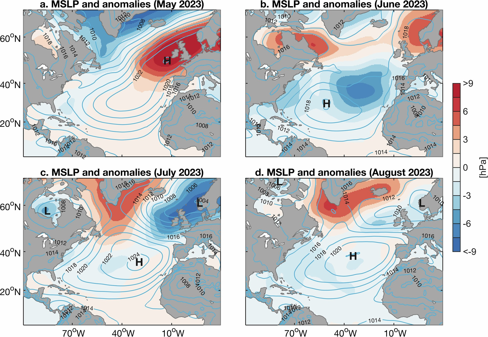
扩展数据图1：2023年5月、6月、7月和8月月平均海平面气压气候态及异常。
Extended Data Fig. 1 Monthly average sea-level pressure climatology and anomalies during May, June, July and August 2023.
a–d，平均海平面气压（hPa）以等值线表示，异常以阴影表示并相对于1981–2010年平均值计算。
a–d, The mean sea-level pressure (hPa) is shown as contours and anomalies are shaded and calculated relative to the 1981–2010 mean.
平均及异常海平面气压场均由ERA5逐小时数据计算。
Mean and anomalous sea-level pressure fields are calculated from hourly ERA5 data.
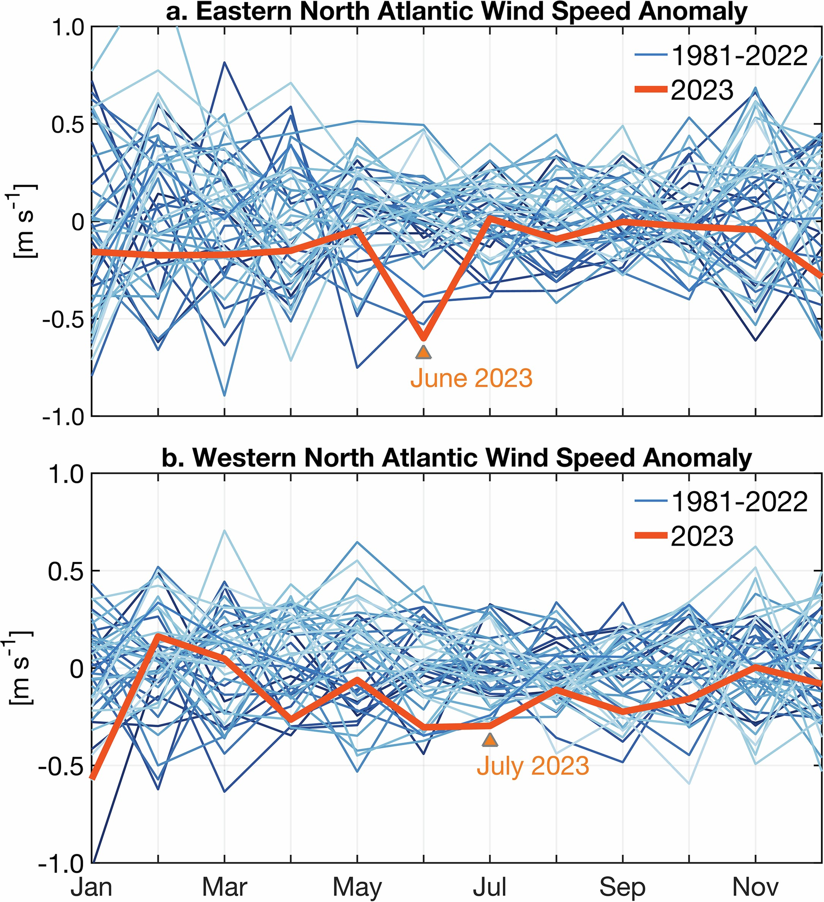
扩展数据图2：北大西洋区域平均及月平均风速异常时间序列。
Extended Data Fig. 2 Time series of North Atlantic area-averaged and monthly-averaged wind speed anomalies.
数值在赤道至60° N之间计算；不同年份以深浅不同的蓝色线表示，从深蓝色（最早年份）至浅蓝色（最近年份），2023年以红色粗线表示。
Values are calculated between the equator and 60° N, with years indicated by colour shaded lines, from dark blues (earliest years) to pale blues (most recent years) and 2023 indicated in bold red.
单位为m s−1。
Units are m s−1.
区域平均分别在40° W以东和以西计算。
Area averages are calculated separately east and west of 40° W.
a，东部北大西洋。
a, Eastern North Atlantic.
b，西部北大西洋。
b, Western North Atlantic.
所示风速由ERA5逐小时数据计算。
Wind speeds shown are calculated from hourly ERA5 data.
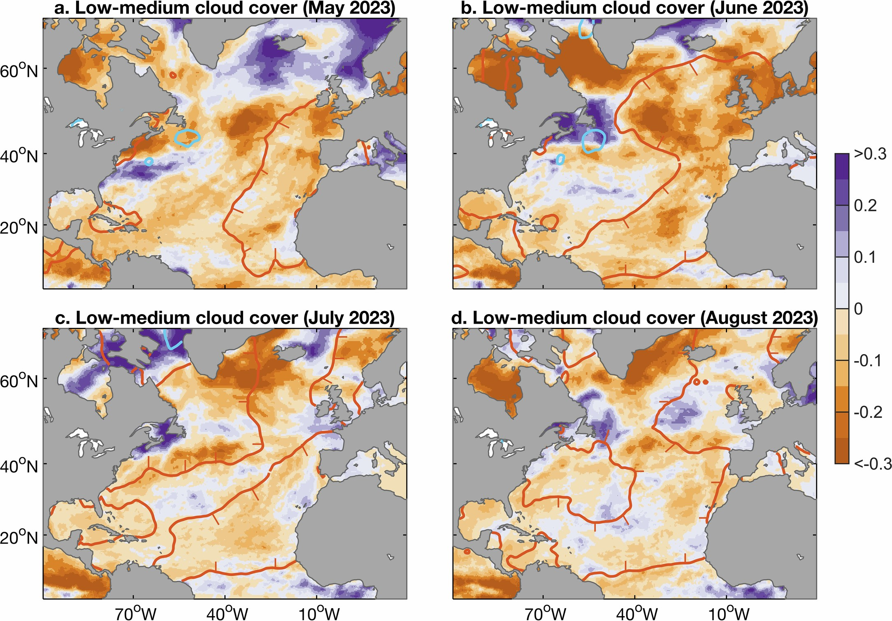
扩展数据图3：2023年5月、6月、7月和8月月平均低–中层云量异常。
Extended Data Fig. 3 Monthly average low–medium level cloud cover anomalies during May, June, July and August 2023.
a–d，云量异常以阴影表示，以覆盖比例计算（数值介于0和1之间），以1981–2010年平均值为基准。
a–d, Cloud cover anomalies are shaded and calculated as a fraction (values ranging from 0 to 1) relative to the 1981–2010 mean.
低–中层云量对应从地表至约450 hPa高度的总云量。
Low–medium cloud cover corresponds to the total cloud cover from the surface up to a height of approximately 450 hPa.
图2中的+1 °C和−1 °C SST异常等值线分别以红色和蓝色叠加显示。
The +1 °C and −1 °C SST anomaly contours from Fig. 2 are overlaid in red and blue, respectively.
为避免任何歧义，在+1 °C异常等值线周围添加红色小刻线，以指示异常增暖区域。
To avoid any ambiguity, the regions of anomalous warming are indicated by the small red tick marks added around the +1 °C anomaly contour.
云量异常由ERA5逐小时数据计算。
Cloud cover anomalies are calculated from hourly ERA5 data.
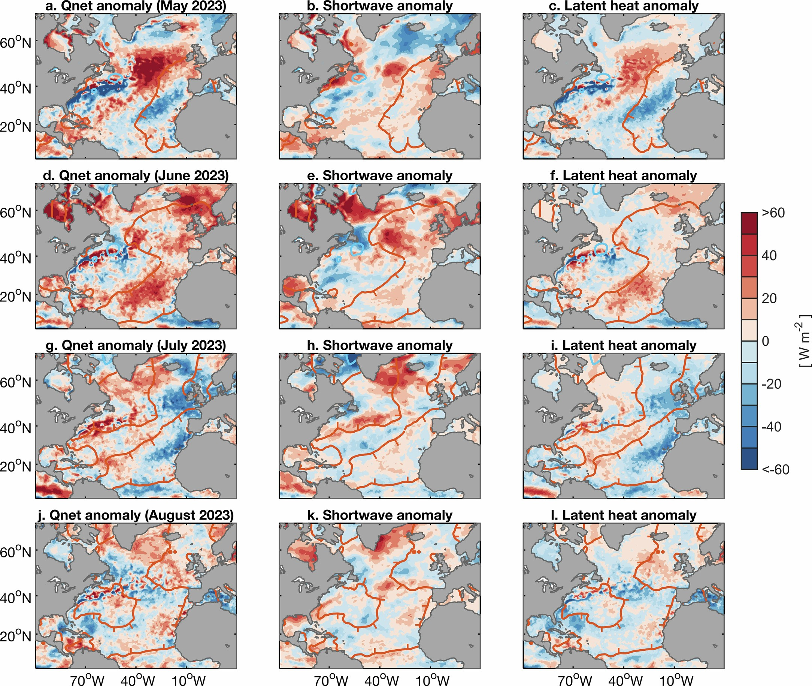
扩展数据图4：2023年5月、6月、7月和8月月平均表面热通量异常。
Extended Data Fig. 4 Monthly averaged surface heat flux anomalies during May, June, July and August 2023.
a–l，图中展示入射海气净表面热通量Qnet（左列）、入射短波辐射（中列）和潜热通量（右列）的月异常。
a–l, Shown are the monthly anomalies in the incoming air–sea net surface heat flux Qnet (left column), the incoming shortwave radiation (middle column) and the latent heat flux (right column).
热通量异常（W m−2）以阴影表示，并相对于1981–2010年平均值计算。
Heat flux anomalies (W m−2) are shaded and calculated relative to the 1981–2010 mean.
正值（红色）表示进入海洋的异常热通量，负值表示海洋对大气的异常加热。
Positive (red) values indicate anomalous heat flux into the ocean, negative values are anomalous ocean heating of the atmosphere.
图2中的+1 °C和−1 °C SST异常等值线分别以红色和蓝色叠加显示。
The +1 °C and −1 °C SST anomaly contours from Fig. 2 are overlaid in red and blue, respectively.
为避免歧义，在+1 °C异常等值线周围添加红色小刻线，以指示异常增暖区域。
To avoid ambiguity, the regions of anomalous warming are indicated by the small red tick marks added around the +1 °C anomaly contour.
全部表面热通量异常均由ERA5逐小时数据计算。
All surface heat flux anomalies are calculated from hourly ERA5 data.
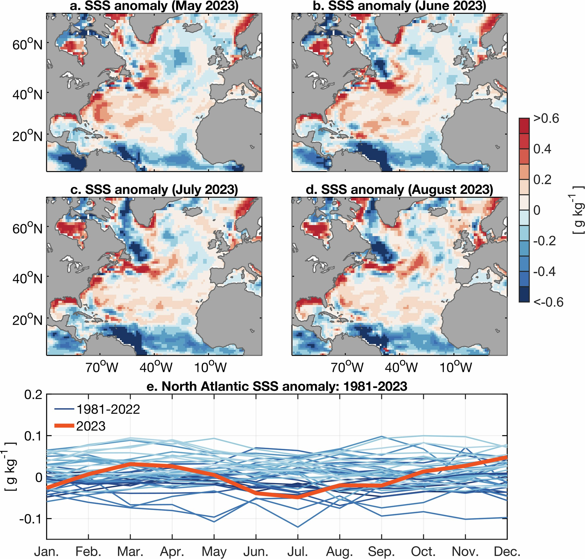
扩展数据图5：2023年5月、6月、7月和8月月平均表面盐度异常。
Extended Data Fig. 5 Monthly average surface salinity anomalies during May, June, July and August 2023.
a–d，盐度异常（阴影）利用IAPv3月数据、相对于1981–2010年平均值计算（方法）。
a–d, Salinity anomalies (shaded) are calculated relative to the 1981–2010 mean using monthly IAPv3 data (Methods).
e，北大西洋（赤道至60° N）区域平均盐度异常时间序列；不同年份以深浅不同的蓝色线表示，从深蓝色（最早年份）至浅蓝色（最近年份），2023年以红色粗线表示。
e, Time series of North Atlantic area-averaged salinity anomalies (equator to 60° N), with years indicated by colour shaded lines, from dark blues (earliest years) to pale blues (most recent years) and 2023 indicated in bold red.
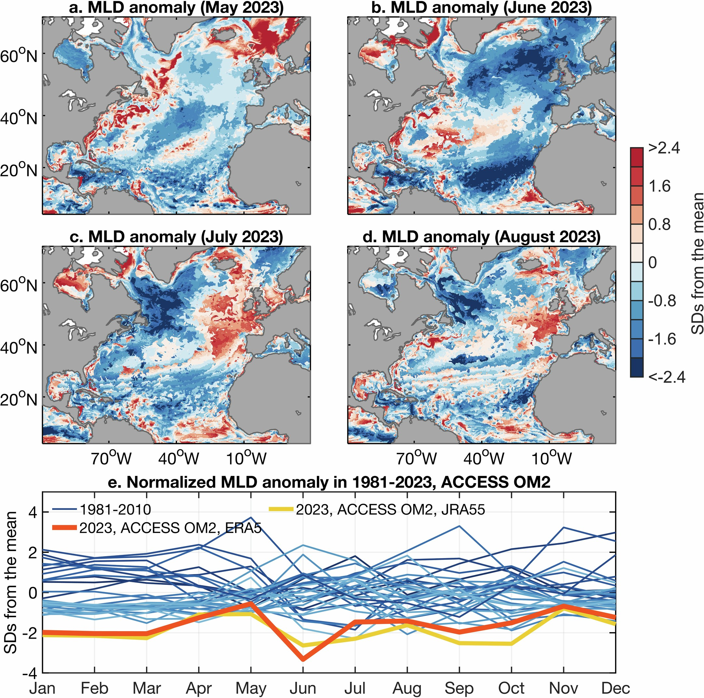
扩展数据图6：2023年5月、6月、7月和8月模式模拟的月平均表层MLD异常。
Extended Data Fig. 6 Monthly average model-simulated surface MLD anomalies during May, June, July and August 2023.
模式数据取自ERA5大气变量强迫的试验。
The model data are taken from the run forced by ERA5 atmospheric variables.
a–d，MLD异常（阴影）以各月各位置的一个标准差（SD）归一化，并以偏离1981–2010年平均值的标准差倍数表示。
a–d, MLD anomalies (shaded) normalized by one standard deviation (SD) for each month and location, and shown as the number of standard deviations from the 1981–2010 mean.
MLD采用相对于表面密度的0.125 kg m−3密度阈值标准计算。
The MLD is calculated using a density threshold criterion of 0.125 kg m−3, relative to surface density.
e，北大西洋（赤道至60° N）区域平均模式MLD异常时间序列；不同年份以深浅不同的蓝色线表示，从深蓝色（最早年份）至浅蓝色（最近年份），2023年以红色粗线表示。
e, Time series of North Atlantic area-averaged model MLD anomalies (equator to 60° N), with years indicated by colour shaded lines, from dark blues (earliest years) to pale blues (most recent years) and 2023 indicated in bold red.
为便于比较，e图还包含JRA55强迫模式试验中的2023年MLD异常。
For comparison, the 2023 MLD anomalies in the JRA55-forced model run are also included in panel e.
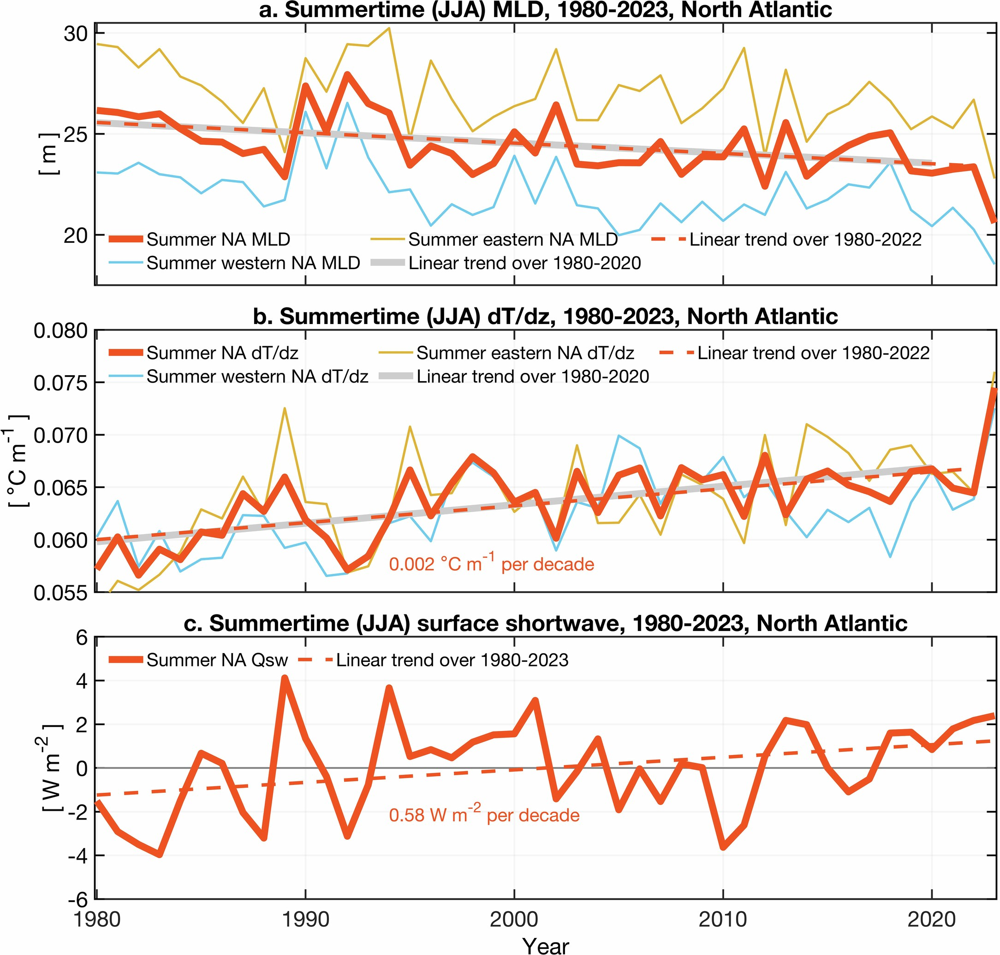
扩展数据图7：夏季海盆平均MLD、上层海洋温度层结和入射太阳辐射异常时间序列。
Extended Data Fig. 7 Time series of summertime basin-averaged MLD, upper ocean temperature stratification and incoming solar radiation anomalies.
夏季北大西洋海盆平均MLD（m）（a）、上层海洋温度层结（°C m−1）（b）及入射太阳辐射异常（W m−2）（c）的时间序列。
Time series of summertime North Atlantic basin-averaged MLD (m) (a), upper ocean temperature stratification (°C m−1) (b), and incoming solar radiation anomalies (W m−2) (c).
海洋时间序列（a、b）由IAPv3得到，太阳辐射异常（c）取自ERA5（方法）。
The ocean time series (a,b) are derived from IAPv3 and the solar radiation anomalies (c) from ERA5 (Methods).
上层海洋温度层结在海表与50 m深度之间计算。
The upper ocean temperature stratification is calculated between the surface and 50-m depth.
所示全部海盆平均趋势线均在95%置信水平上显著。
All basin-averaged trend lines shown are significant at the 95% confidence level.
a图中，1980–2023年6–8月平均MLD的变浅趋势为每十年−0.58 m。
In panel a, the shoaling trend in MLD averaged over June–August is −0.58 m per decade during 1980–2023.
a和b图展示了排除及包含2020–2022年时段（国际海事组织2020年协议[27,28]实施后）的趋势线。
In panels a and b, trend lines are shown excluding and including the period 2020–2022 (after the International Maritime Organization 2020 agreement[27,28]).
a和b图中的时间序列既展示整个北大西洋，也分别展示西部和东部海域（以40° W为界）。
Time series in panels a and b are shown for the whole North Atlantic as well as separated into the western and eastern sectors (separated at 40° W).
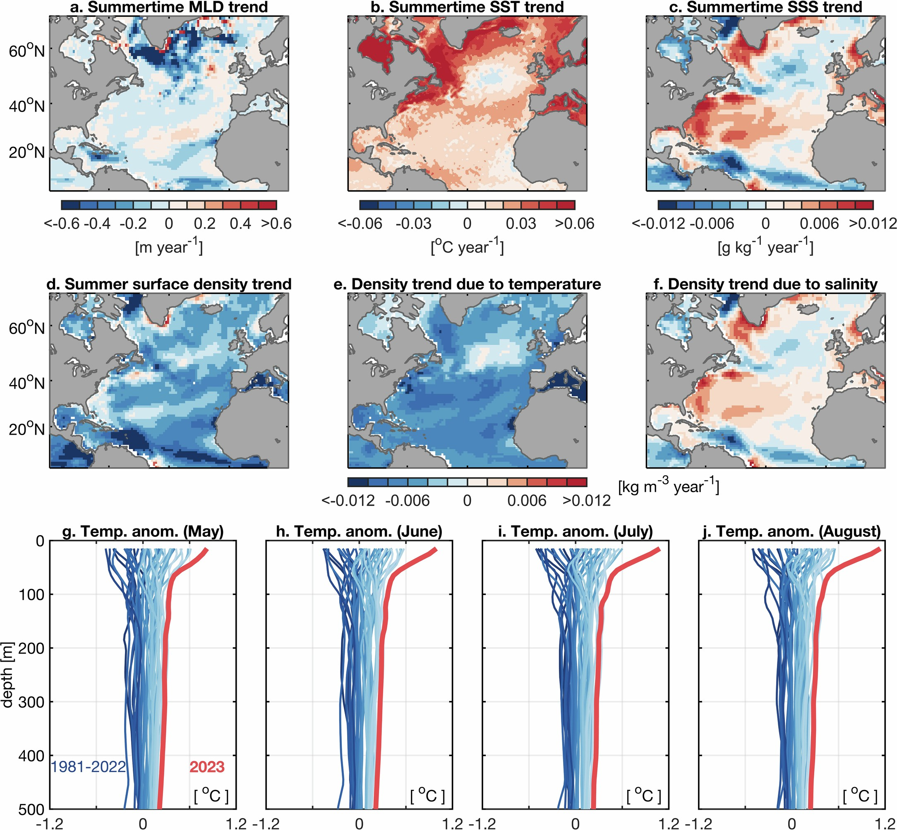
扩展数据图8：1981–2023年北大西洋夏季平均MLD、SST、盐度和密度趋势，以及温度剖面异常。
Extended Data Fig. 8 Trends in summertime mean MLD, SST, salinity and density, and anomalies in temperature profiles over the North Atlantic during 1981–2023.
趋势针对1981–2023年夏季6–8月计算。
Trends are calculated over the period 1981–2023 for the summer June–August season.
a–c，6–8月MLD、SST和海表盐度（SSS）的趋势。
a–c, June–August trends in MLD, SST and sea surface salinity (SSS).
单位分别为m/年、°C/年和g kg−1/年。
Units are m, °C and g kg−1 per year, respectively.
MLD定义为水柱月平均位密度首次比10 m深度的密度大0.125 kg m−3时的深度。
MLD is calculated as the depth at which the monthly averaged potential density in the water column first exceeds the density at 10-m depth by 0.125 kg m−3.
d–f，6–8月表面密度趋势，以及分别仅由表面温度和盐度效应估计的密度趋势。
d–f, Trends in June–August surface density and the estimated density trend due to surface temperature and salinity effects alone.
单位为kg m−3/年。
Units are kg m−3 per year.
g–j，1981–2023年5–8月北大西洋（赤道至60° N）平均温度剖面异常，以1981–2010年气候平均值为基准计算；不同年份以深浅不同的蓝色线表示，从深蓝色（最早年份）至浅蓝色（最近年份），2023年以红色粗线表示。
g–j, Anomalies in temperature profiles averaged over the North Atlantic (equator to 60° N) during May–August 1981–2023, calculated relative to the 1981–2010 climatological mean, with years indicated by colour shaded lines, from dark blues (earliest years) to pale blues (most recent years) and 2023 indicated in bold red.
SST数据取自ERA5，而表面盐度、密度、MLD及次表层T–S数据取自IAPv3（方法）。
Data for SST are taken from ERA5, whereas surface salinity, density, MLD and subsurface T–S data are taken from IAPv3 (Methods).
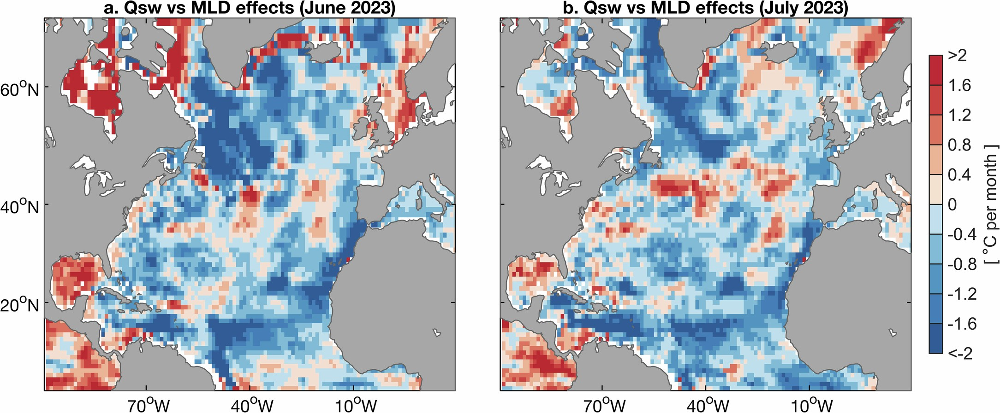
扩展数据图9：显示异常浅混合层（蓝色区域）或异常强入射短波辐射（红色区域）主导MLT收支位置的空间分布图。
Extended Data Fig. 9 Geographic plot showing locations where anomalously shallow mixed layers (blue regions) or anomalously high incoming shortwave radiation (red regions) dominate the MLT budget.
该分析基于观测及再分析数据，展示增暖最强月份2023年6月（a）和2023年7月（b）的情况。
The analysis is shown for the peak warming months of June 2023 (a) and July 2023 (b), based on observations and reanalysis data.
数值基于以下两项MLT收支贡献之差：（1）将MLD固定于其气候平均值（QSW变化）所估计的净短波辐射项（QSW）；（2）将入射短波辐射固定于其气候平均值（MLD变化）所估计的混合层变浅项。
Values are based on the difference between the MLT budget contributions from (1) the net shortwave radiation term (QSW) estimated by holding the MLD value at its climatological mean (with QSW varying) and (2) the mixed layer shoaling term estimated by holding incoming shortwave radiation at its climatological mean (with MLD varying).
因此，红色阴影表示太阳辐射效应主导MLT异常的区域，蓝色阴影表示MLD变浅主导MLT异常的区域。
In this way, red shading denotes areas in which the solar radiation effect dominates the MLT anomalies and blue shading denotes regions in which MLD shoaling dominates the MLT anomalies.
收支项利用ERA5海气热通量，结合由IAPv3得到的MLD和MLT计算（方法）。
The budget terms are calculated using ERA5 air–sea heat fluxes combined with MLD and MLT derived from IAPv3 (Methods).
此处分析未包含航运排放年际变化的影响。
The analysis presented here does not include the effects of interannual variability in shipping emissions.
估计航运排放影响的更多细节见方法及扩展数据图11。
See Methods and Extended Data Fig. 11 for further details estimating shipping emission effects.
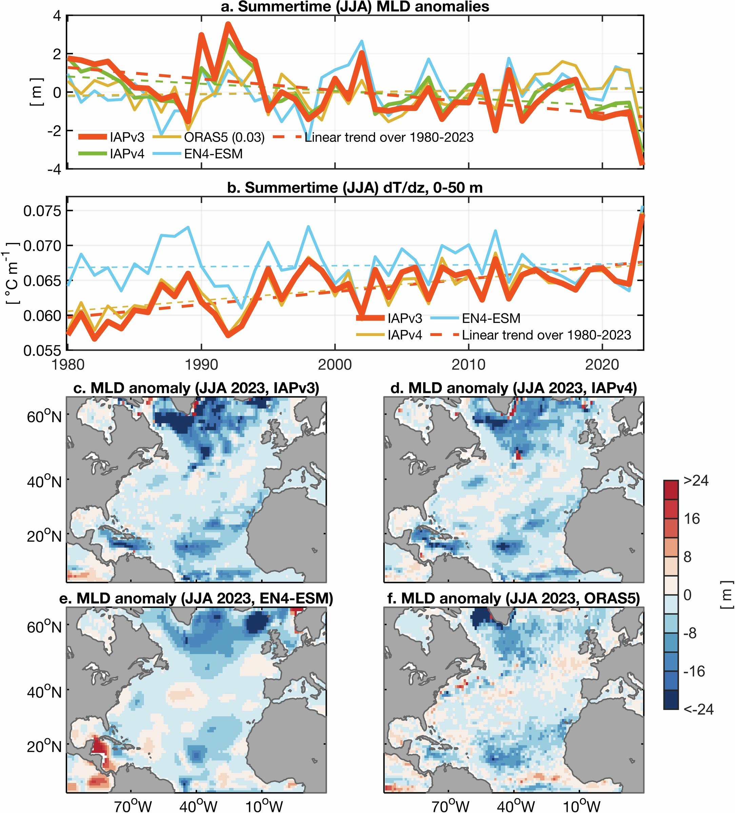
扩展数据图10：使用不同海洋再分析产品得到的夏季北大西洋MLD及温度垂向梯度异常。
Extended Data Fig. 10 Anomalies in summertime North Atlantic MLD and vertical gradients in temperature using different ocean reanalysis products.
a，1980–2023年夏季（6–8月）海盆平均北大西洋MLD（m）异常时间序列。
a, Time series of summertime (June–August) basin-averaged North Atlantic MLD (m) anomalies during 1980–2023.
b，与a相同，但展示海盆平均dT/dz（°C m−1）。
b, Same as a but showing basin-averaged dT/dz (°C m−1).
c–f，利用IAPv3、IAPv4、ORAS5及EN4-ESM再分析产品估计的2023年夏季MLD异常（m）。
c–f, Summertime anomalies in MLD (m) estimated during 2023 from the IAPv3, IAPv4, ORAS5 and EN4-ESM reanalysis products.
a和b图中的虚线表示线性趋势。
Linear trends are indicated by the dashed lines in panels a and b.
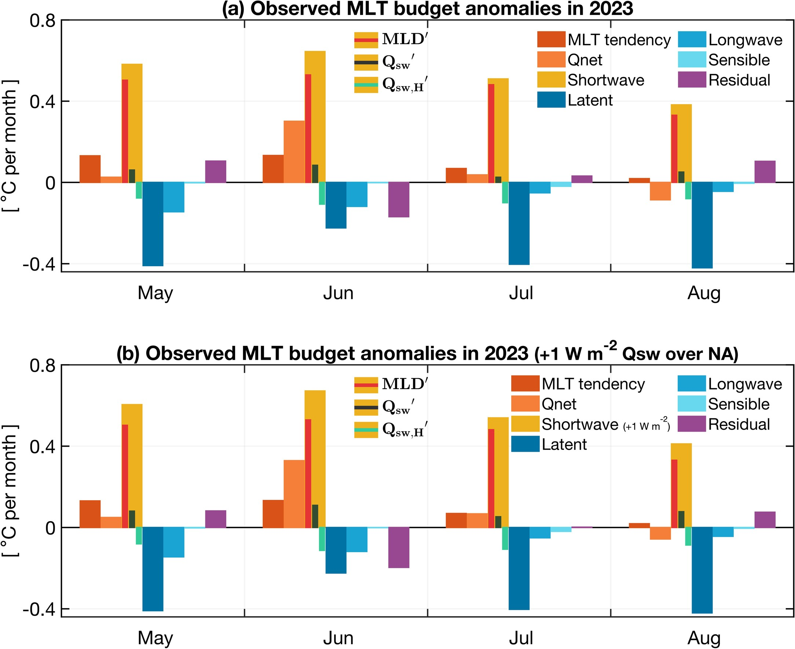
扩展数据图11：分析2023年北大西洋海洋热浪期间航运排放对观测混合层温度收支的潜在影响。
Extended Data Fig. 11 Analysis of potential shipping emissions impacts on the observed mixed layer temperature budget during the 2023 North Atlantic marine heatwave.
（a）与正文图5a相同的MLT收支，置于此处以便比较；表面热通量各项使用ERA5估计。
(a) MLT budget as per Fig. 5a of the main paper, included here for comparison, using ERA5 estimates for the surface heat flux terms.
注意，ERA5再分析未包含航运排放年际变化的影响。
Note that the ERA5 reanalysis does not include the effects of interannual variability in shipping emissions.
（b）与（a）图相同，但展示在2023年入射太阳辐射项QSW上额外施加1 W m−2异常后重新计算的MLT收支各项，用以检验航运排放减少对观测MLT收支的潜在影响。
(b) Same as panel (a), but showing the MLT budget terms recalculated imposing an additional 1 W m−2 anomaly in the incoming solar radiation term QSW during 2023, to examine the potential impact of reduced shipping emissions on the observed MLT budget.
2023年整个北大西洋均施加了额外的1 W m−2。
The additional 1 W m−2 is applied over the whole North Atlantic in 2023.
作为参考，航运排放减少影响的估计通常介于0.1–0.3 W m−2之间；针对北大西洋海盆平均的最高估计，对应2023年QSW增加0.56 W m−2（文献[31]）。
For reference, estimates of the impact of reduced shipping emissions typically vary between 0.1 — 0.3 W m−2, with highest estimates for the basin-averaged North Atlantic corresponding to an increase in QSW of 0.56 W m−2 during 2023 (ref. [31]).
因此，（b）图可以解释为MLT收支计算中航运减排效应的上界。
In this way, panel (b) can be interpreted as an upper bound on the effects of shipping emission reductions in the MLT budget calculation.
所示方法和柱状图各项与图5a中的各项一致。
The methods and bar chart terms shown match the terms shown in Fig. 5a.
权利与许可
Rights and permissions
开放获取：本文采用知识共享署名4.0国际许可协议，允许以任何媒介或格式使用、分享、改编、分发和复制，但须适当注明原作者及来源，提供知识共享许可协议链接，并说明是否作出更改。
Open Access This article is licensed under a Creative Commons Attribution 4.0 International License, which permits use, sharing, adaptation, distribution and reproduction in any medium or format, as long as you give appropriate credit to the original author(s) and the source, provide a link to the Creative Commons licence, and indicate if changes were made.
除材料署名说明另有指示外，本文图片及其他第三方材料均包含在本文知识共享许可协议之内。
The images or other third party material in this article are included in the article’s Creative Commons licence, unless indicated otherwise in a credit line to the material.
若材料未包含在本文知识共享许可协议内，而您的预期用途不为法律规定所允许或超出其允许范围，则须直接向版权所有者获取许可。
If material is not included in the article’s Creative Commons licence and your intended use is not permitted by statutory regulation or exceeds the permitted use, you will need to obtain permission directly from the copyright holder.
查看该许可协议副本，请访问http://creativecommons.org/licenses/by/4.0/。
To view a copy of this licence, visit http://creativecommons.org/licenses/by/4.0/.
重印与许可
Reprints and permissions
术语与图例对照
| English | 中文 |
|---|---|
| marine heatwave | 海洋热浪 |
| mixed layer depth (MLD) | 混合层深度 |
| mixed layer temperature (MLT) | 混合层温度 |
| sea surface temperature (SST) | 海表温度 |
| shoaling / shallowing | 变浅／抬升 |
| stratification | 层结 |
| thermal inertia | 热惯性 |
| air–sea heat flux | 海气热通量 |
| net surface flux | 净表面通量 |
| shortwave / longwave | 短波／长波 |
| latent / sensible heat flux | 潜热／感热通量 |
| advection | 平流 |
| entrainment / detrainment | 卷入／脱卷入 |
| vertical mixing | 垂向混合 |
| residual | 残差 |
| tendency | 倾向（变化率） |
| conservative temperature | 保守温度 |
| potential temperature / density | 位温／位密度 |
| preconditioning | 前期条件形成 |
| freshening | 淡化 |
| meridional overturning circulation | 经向翻转环流 |
| low–medium cloud cover | 低–中层云量 |
| surface density trend | 表面密度趋势 |
| wind speed anomaly | 风速异常 |
| SDs from the mean | 偏离均值的标准差倍数 |
| linear trend | 线性趋势 |
| eastern / western North Atlantic | 东部／西部北大西洋 |